生成时间：2026-11-19T13:13:30+08:00
今日保留论文数：15
内容构成：今日新文 15 篇；补充推荐 0 篇；经典旧文精读 0 篇
阅读分层：重点精读 6 篇；相关简报 9 篇。精读依据科学贡献筛选，简报保留方法、结论及局限。
数据源警告
- 本次有 2 个数据源访问异常；完整错误已保留在运行日志中，日报只显示摘要。
- 其他来源：2 个异常。
- 主要错误类型：其他 2 次。
高能天体物理重点
1. Isotropic diffuse gamma-ray flux limits from Carpet-3 experiment data using neural networks with domain adaptation
- 来源：arXiv / astro-ph.HE
- 链接：https://arxiv.org/abs/2611.23389
- 作者：D. D. Dzhappuev, I. M. Dzaparova, T. A. Dzhatdoev, E. A. Gorbacheva, I. S. Karpikov, M. M. Khadzhiev, A. U. Kudzhaev, A. N. Kurenya
- 公告 / 来源日期：2026-11-19
- 阅读层级：重点精读
- 评分：novelty 8/10，importance 8/10，relevance 10/10，final 9.70/10
- 推荐理由：摘要初筛：Carpet-3以1078天实测数据结合无监督域适配给100 TeV至10 PeV各向同性弥散伽马限值，兼有直接高能约束和模拟实测差异处理价值；全文须核查候选数、覆盖率及域适配是否引入信号效率偏差。
中文题目：Carpet-3 用域适配神经网络收紧百 TeV 至 PeV 各向同性弥散伽马射线上限
做了什么：作者分析 Carpet-3 在2022年6月17日至2026年4月7日积累的1078天数据，寻找从100 TeV到10 PeV、遍布视场的弥散伽马辐射。质量筛选后共有161076个空气簇射事件。伽马簇射通常比强子簇射少缪子，因此网络同时读取中央阵列的20×20能量沉积图和重建参数，包括升级后410平方米缪子探测器的计数。困难是模拟与实测分布不同，精细图像分类器容易把这种差别误认成粒子类型；作者引入域适配，让特征保留伽马/强子差异，同时削弱模拟/实测差异。
网络通过独立模拟样本选择逐能区阈值，再将候选数与有效曝光转换为90%置信水平上限。在假定 $E^{-2}$ 谱的口径下，100 TeV以上积分强度小于 $3.2\times10^{-13}\,\mathrm{cm^{-2}\,s^{-1}\,sr^{-1}}$，1 PeV以上小于 $3.54\times10^{-14}\,\mathrm{cm^{-2}\,s^{-1}\,sr^{-1}}$。这些是上限而非弥散信号测量；低于1 PeV的若干微分能区确有候选超额，但作者明确认为近触发阈值的模拟—实测效率差异尚未排除，暂不作物理信号解释。
为什么重要：超高能伽马和中微子在强子相互作用中伴生，但伽马会被背景光吸收，约1 PeV时传播尺度已降至约10 kpc。因此一个大角尺度的伽马上限，能帮助区分中微子的本地、银河周边与河外来源，也可检验改变光子传播的模型。本文增加的是观测端的可比较约束：PeV以上微分上限较Carpet-2更强，低能端也得益于更强的强子排斥；它没有直接拟合或排除某个具体暗物质、轴子或宇宙线模型。
理论 / 观测 / 仪器方法价值：最可借鉴的是将粒子识别目标与模拟域稳健性分开优化。作者先使域适配所用质子模拟的簇射大小分布接近实测，再用反向梯度避免网络仅凭能谱差异区分域。否则，即使域分类任务成功，学到的也可能只是训练样本的能量采样区别。该设计适用于依赖模拟训练的空气簇射分析，但须另外验证伽马效率、背景尾部和能量阈值；本文的分布对齐不能替代这些检验。
为什么应该关注：对IACT、LACT及地面高能阵列分析，本文展示了细粒度探测器信息如何提升判别力，也展示了精细网络在实测上可能更脆弱。真正值得关注的不是单一分类准确率，而是设定通量上限所用的极低误判尾部能否迁移、有效面积能否复现，以及域适配会否压掉真实物理差异。低能候选超额被保留为待查问题，正是这一方法边界的具体例子。
展开详细解读：文章讲解、背景、理论、重点章节、图表与相关工作
文章详细讲解
科学问题是：在没有干净天空对照区的条件下，能把各向同性超高能伽马通量压到多低？若信号遍布视场，就不能像点源搜索那样从邻近方向直接估背景；对簇射形态、缪子数和仪器响应的模拟依赖因而更强。论文从这个测量困难出发，而不是从某种新物理模型出发。
作者把400个闪烁体的能量沉积视作一张小图，两种归一化分别保存整体能量尺度与单事件内部形态。图像分支和重建量分支合并成32维特征，之后分别预测粒子类型和数据域。类型头只从带标签模拟学习；域头用无标签实测与按实测簇射大小重加权的质子模拟学习，并通过梯度反转迫使共享特征少记住域差异。
核心结果由分类诊断和通量约束两部分组成。域适配使模拟质子与实测预测分布的KL散度约缩小15倍，UMAP二维投影也呈现更大重叠。之后各能区独立选择分类阈值，结合模拟效率与1078天曝光得到表1、表2的积分和微分上限。积分分析100 TeV以上只有1个候选，而部分微分能区有较多候选，这并不矛盾：两类分析分别优化阈值，样本选择不同，不能把微分候选数直接相加还原积分样本。
局限集中在实测迁移与效率模型。质子之外的核成分没有纳入训练，作者认为纯质子更难与伽马区分，因而偏保守；这不等于已证明所有成分和所有判别尾部都被正确模拟。强子相互作用模型依赖的完整研究尚属未来工作。低于1 PeV的超额也未被确认为信号，尤其不能用“域适配已经对齐”跳过触发与重建效率的系统核查。
关键结果是怎么做出来的
第一步先固定实际曝光与质量样本。中央阵列面积196平方米，缪子探测器由旧175平方米和新235平方米部分组成，读出方式不同，因此旧部分缪子数与总缪子数作为独立输入。轴心须在中央阵列内部且避开边缘，中央能量沉积大于5000个相对论粒子单位，触发单元超过200个，天顶角不超过40度。由此得到的161076事件才是后续比较的数据集。
第二步建立同一重建链下的模拟。CORSIKA 7.8000 配合QGSJET-III与FLUKA 2024.1，分别模拟15000个质子簇射和15000个伽马簇射，能量10 TeV至10 PeV，采样谱为 $E^{-1}$。每个簇射随机平移100次，质量筛选后构成426981个分类事件。另一套78911个质子事件匹配实测的重建簇射大小分布，用于域学习；不能把这套采样谱与最后用于通量换算的 $E^{-2}$ 信号谱混为一谈。
第三步看域对齐是否真的改善分类器的实测行为。类型头采用focal loss，域头用二元交叉熵且损失权重为0.2；反向梯度强度从零逐渐增加，以免一开始抹掉分类特征。训练留出验证数据并早停，测试集有160000事件。图2/图3对比有无域适配时的预测分布，图4展示32维特征的UMAP投影，KL散度下降给出量化辅助证据。这些诊断支持分布改善，却不是背景尾部概率或真实伽马效率的完整覆盖率验证。
第四步从分类器转为上限优化。每个能区选择使伽马效率与背景数上限之比最大的阈值。背景用没有参与分类器训练的、接近实测分布的独立质子样本估计，并缩放到全数据量。原文明确指出，这依赖模拟质子与实测误判分布能够迁移；域适配的目标正是减轻这一前提的脆弱性，而不是使其自动成为定理。
第五步对照表格理解结果。积分阈值 $10^{14}$ eV处总伽马效率仅0.004，背景预期2、候选1，对应强度上限 $3.2\times10^{-13}$；$10^{15}$ eV处效率0.28，背景1.3、候选0，对应 $3.54\times10^{-14}$，单位均为 $\mathrm{cm^{-2}\,s^{-1}\,sr^{-1}}$。微分中心 $\log_{10}(E/\mathrm{eV})=14.375$ 处预期背景8、候选55，上限 $E^2dN/dE<1.57\times10^3\,\mathrm{eV\,cm^{-2}\,s^{-1}\,sr^{-1}}$；这一超额只作为待解决的近阈值问题记录，没有被换成“发现显著性”。
展开背景、理论、公式、模型和章节导读
背景知识
高能宇宙线撞击气体产生介子，带电介子衰变可给出中微子，中性介子则给出伽马射线。两者因此能交叉检验同一强子加速器，但观测到的比例还取决于传播与源内吸收。中微子能跨越宇宙尺度，PeV光子却很容易在背景辐射上成对产生电子和正电子，所以“中微子天空有信号”并不要求地球必然看到同量级的河外PeV光子。
弥散辐射可以来自未分辨源、银河宇宙线与气体相互作用，也可能来自本地泡或银河周边气体。所谓各向同性在本文是建立曝光与强度换算的假设，不是已经验证所有方向完全均匀。若要将上限应用于具体空间模板，仍需对相应方向分布和仪器接受度重新积分。
地面阵列间接测量大气簇射。伽马初级主要驱动电磁级联，质子和原子核产生更丰富的强子分支和缪子，因此“少缪子”是传统判据。然而统计涨落会让部分强子簇射看起来像伽马，探测器覆盖也有限，不能凭零或少数缪子就逐事例确认证据。中央阵列的空间沉积图提供额外信息，正是网络能改善背景排斥的来源。
模拟差异通常既有空气簇射物理，也有仪器响应和成分混合的贡献。原文没有确定哪一项主导Carpet-3差异，尤其老中央阵列与电子学可能存在未建模细节。域适配采用统计方法压低这些差异对分类器的影响，不等于查明或修复仪器的物理原因；这一分工应与独立标定并行。
基础理论 / 方法脉络
类型分类器把探测器图像和重建特征映射为分数 $\xi$，越接近1越像伽马。分数是训练目标下的判别输出，不能未经校准直接解释为某个真实事件来自伽马的天体物理后验概率；实际先验中强子数量远大于伽马，训练样本比例也不等于天空比例。
域适配引入第二个问题：同一组隐特征能否识别事件来自模拟还是实测？若能轻易识别，类型判别可能利用了不可靠的域特征。梯度反转让域头努力区分域，同时让特征提取器朝相反方向变化；类型损失仍要求保存物理判别能力。理想域头约50%准确率只是两个平衡域难以区分的指标，不能单凭这个数证明全部条件分布相同。
选择函数是连接探测器与天体强度的关键。入射光子要经过几何接受、触发、重建、质量切和类型阈值，才能进入候选表。有效面积把这些步骤的概率乘进几何面积，再对视场和时间积分得到有效曝光。低能端触发效率很小，所以谱假设和近阈值模拟会显著影响换算。
置信上限属于重复实验的统计构造，本文采用90%置信水平及Feldman–Cousins框架处理低计数。它不等于“真实通量有90%概率在这里以下”的贝叶斯陈述，也不能把分类器背景预测当成完全无误差的真值。本文给出的是特定响应、谱假设与背景迁移前提下的结果；系统误差研究尚未完成的部分必须另列。
公式与推导
先从网络的输出到选择概率。以下前四式为解释本文方法的教学记号，原文只明确给出梯度反转机制及式(1)、式(2)，没有逐项写出这些等式。对特征 $x$，共享映射 $f$ 和类型头 $h$ 给出
阈值 $\xi_0$ 定义伽马保留效率与质子误判率：
两者须在相应能区和选择条件下估计，不是整个数据集通用常数。
设域损失为 $L_d$、分类损失为 $L_c$，梯度反转的工作关系为
负号只作用于传回特征提取器的域梯度；域头自身仍最小化 $L_d$。这样解释才能避免误以为整个模型都在最大化分类错误。按独立模拟误判率估背景的教学表达为
具体实施需使用对应能区与实验样本缩放，不能拿全样本乘任意能区误判率。
原文式(1)的阈值优化目标是
分母是背景计数的90%上限，分子是伽马分类效率；最大化此比值是在低计数上限目标下折中效率与背景排斥。这里的分母不是观测到候选后最终报告的信号上限，两种步骤不能互换。
原文式(2)定义各向同性有效曝光：
若面积用平方厘米、时间用秒，它的单位为 $\mathrm{cm^2\,s\,sr}$，且 $A_{\rm eff}$ 已包含触发、重建、质量和类型选择。为说明后续换算，令微分强度 $J(E)=K E^{-2}$，则教学上的期望信号计数为
将统计构造给出的计数上限 $\mu_s^{90}$ 代入即可得到
微分图展示 $E^2J(E)$ 的上限，积分上限则是对假定谱再做能量积分。本文两类阈值分别优化，故不能用微分表候选数求和复制积分表结果；谱权重也必须与曝光定义一致，不能重复乘选择效率。
模型拟合 / 应用方法
本文没有拟合具体源的辐射模型，拟合工作的主体是监督分类与对抗式域适配，之后是计数统计上限。输入由20×20双通道图像与标量特征构成，图像的两种归一化分别保留绝对尺度和形态；旧缪子探测器与总缪子计数并列，处理两代读出的差异。32维瓶颈更宽未显著改善性能，这是架构选择的经验依据。
分类训练使用伽马与质子 $E^{-1}$ 模拟，域训练使用实验式质子样本与部分实测事件。先匹配簇射大小分布是必要控制：如果不做，域头仅凭模拟高能事件过多就能轻易分类。实测不带粒子标签，作者基于伽马占比很小的预期，将它与质子模拟进行域对齐；若将来出现非可忽略信号或成分变化，这一训练设定需要重新检查。
优化采用focal loss强调难分事件，域损失权重0.2，梯度反转逐步增强，并监测验证分类损失、耐心值3个epoch早停。原文给出测试集规模与验证比例，但没有清楚说明同一CORSIKA母簇射的100次平移是否按母簇射整体分组划入训练与测试；因此不能宣称已排除所有模拟重用相关性。该项应列作复现实验中要核对的划分条件，而不是断言论文已经发生泄漏。
输出诊断包括有/无域适配的分数分布、KL散度与UMAP投影。读这些图要把“整体更接近”与“极端尾部可靠”分开：通量上限可能由万分之一量级误判率决定，整体散度改善并不能独自约束尾部。作者计划另行研究强子模型系统差异，所以目前不能将域适配称为已全面消除模型依赖。
最后独立优化积分或微分能区阈值，并按 $E^{-2}$ 信号谱计算效率与曝光。原文低能表格有实测候选超额，触发效率图又显示阈值附近效率迅速变化，二者合起来指出下一步应检查触发、重建、谱权重与数据—模拟响应。本文没有给出这些系统影响的完整误差预算，也没有把超额拟合成弥散物理成分。
重点章节 / 结果段落怎么读
-
第II节先核对1078天曝光、161076个事件与四项质量切，理解表格适用的观测样本；同时区分175与410平方米缪子量的读出含义。
-
第II.2节对照两类模拟集：一个负责物理分类，一个匹配实测簇射大小以负责域适配。把采样谱、目标谱与实际宇宙线谱分清，后面才不会误读效率。
-
第III节连读架构、反向梯度和对照训练，再看图2—4。正文个别图号交叉引用有重复，应该依据图注辨认：图2有域适配，图3无域适配；UMAP重叠是辅助诊断而非信号证明。
-
第IV节式(1)、式(2)与表1、表2连读，明确阈值分别优化、强度与微分强度单位不同；以100 TeV和1 PeV两行做数量级校验。
-
第IV节末与结论重点读低于1 PeV的超额处理。作者将它留给响应系统研究，没有报告物理发现，解读不能超出这个证据边界。
关键图表与解读
图4
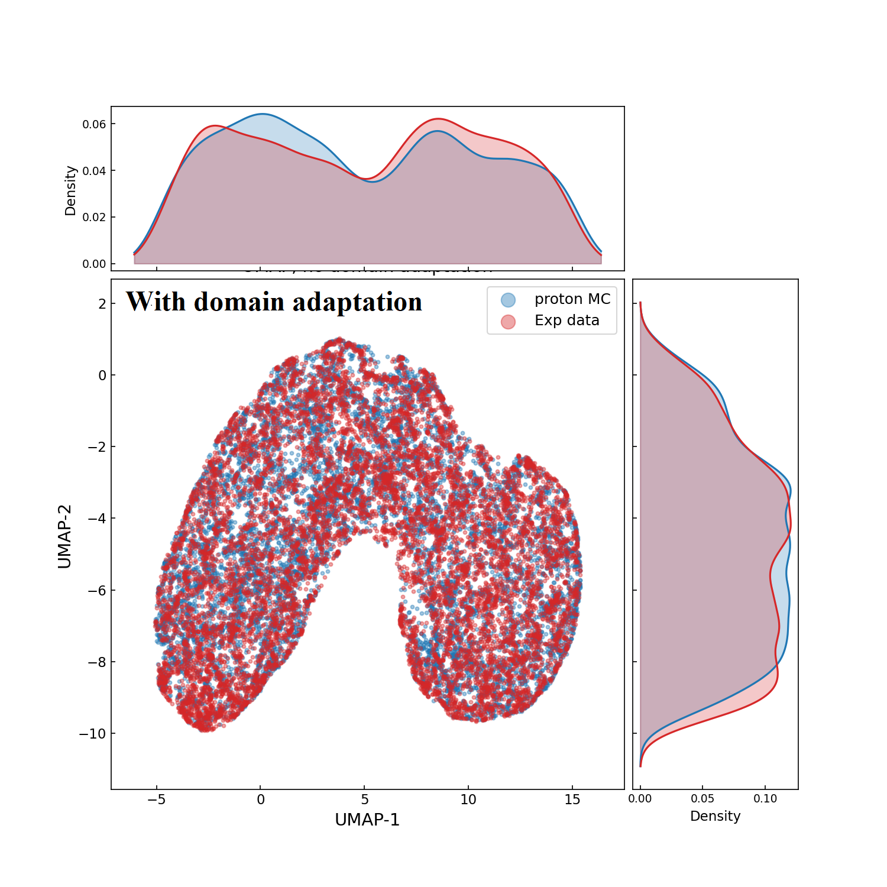
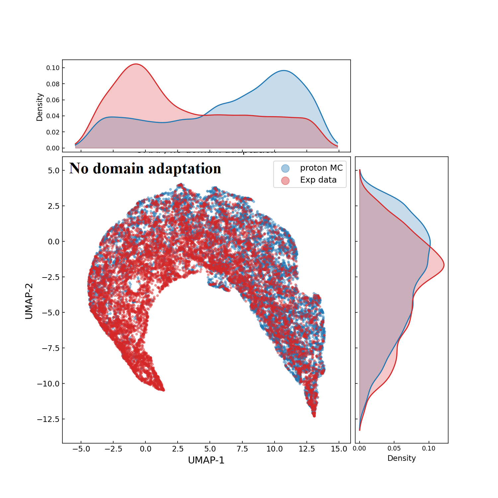
图注：32维隐特征的UMAP二维投影，对比质子模拟与实测的10000事件子样本。左侧使用域适配，右侧未使用；旁侧给出相应投影的边缘密度分布。二维轴为降维坐标，没有直接物理单位。
怎么看这张图：先看有域适配时两域在投影及边缘分布中的重叠增加，再记住这不是极端误判尾部或真实伽马效率的校准证明。 展示方法改善及其证据边界。
来源与置信度：arXiv HTML；source verified；https://arxiv.org/html/2611.23389v1/pics/da_umap_scatter_with_marginals_text.png；https://arxiv.org/html/2611.23389v1/pics/noda_umap_scatter_with_marginals_text.png
图7
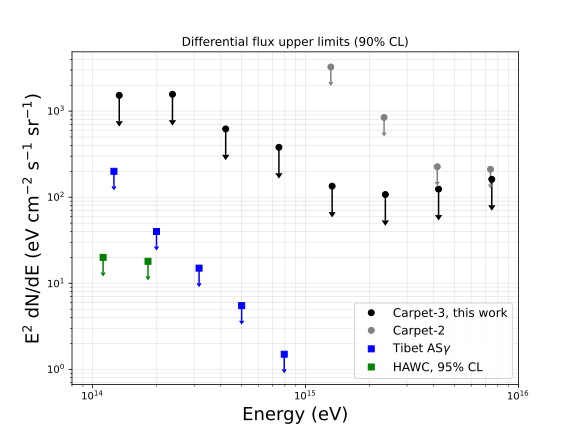
图注：各向同性弥散伽马射线微分强度的90%置信水平上限。黑色圆点为本研究Carpet-3，灰色圆点为Carpet-2，绿色方框为HAWC（图内标明95%置信水平，和本研究90%口径不同），蓝色方框为其他作者对Tibet ASγ结果的分析。横轴为光子能量，纵轴以能量平方加权微分强度表示，单位为电子伏每平方厘米每秒每球面度；各点是上限，不是探测通量。
怎么看这张图：比较PeV以上黑点与旧Carpet-2结果，并结合表2读取低能端候选超额；上限没有把该超额宣布为弥散信号。 比较实验时注意HAWC标注95%置信水平，与Carpet-3的90%不同。 承载核心观测结果及跨实验比较。
来源与置信度：arXiv HTML；source verified；https://arxiv.org/html/2611.23389v1/flux_limits_diff_final.svg
强相关工作
观测比较最直接的是Carpet-2的2023年各向同性PeV光子上限（原文参考文献15，DOI:10.1134/S0021364022603244）。Carpet-3通过更大缪子面积与网络判别，在相近曝光量级下改进约束；但不能仅把改进全部归因于域适配，因为硬件与分类方法同时变化。图7还对比HAWC的10 TeV以上弥散背景限制（arXiv:2209.08106）与对Tibet ASγ数据的高纬分析（arXiv:2107.06541）；这些工作适用视场、空间口径不同，比较时应保留各自定义。
方法基础是Ganin与Lempitsky的梯度反转域适配（原文参考文献20，arXiv:1409.7495），其作用是学习对域不敏感的表示。本文把它放进一个需要极端背景排斥的空气簇射上限分析，科学要求比普通分类准确率更严格。物理背景可沿Ahlers与Murase关于用伽马探测IceCube银河来源的工作（arXiv:1309.4077），以及Vernetto与Lipari关于银河内高能伽马吸收（arXiv:1608.01587）继续阅读；这些文献解释为何强度上限须与传播距离、空间模板一起使用。
同一事件 / 同类源线索：
相似工作：
- https://doi.org/10.1134/S0021364022603244
- https://arxiv.org/abs/2209.08106
- https://arxiv.org/abs/2107.06541
基础理论 / 方法工作：
- https://proceedings.mlr.press/v37/ganin15.html
- https://arxiv.org/abs/1309.4077
- https://arxiv.org/abs/1608.01587
相反观点 / 张力线索：
（未提供）
2. Leading Axion Sensitivity with Interstellar Medium Optical Line Emission
- 来源：arXiv / astro-ph.HE
- 链接：https://arxiv.org/abs/2611.23385
- 作者：Rebecca K. Leane, Gowri Sundaresan
- 公告 / 来源日期：2026-11-19
- 阅读层级：重点精读
- 评分：novelty 8/10，importance 8/10，relevance 8/10，final 9.00/10
- 推荐理由：摘要初筛：将轴子衰变能量沉积转为固定原子Hα线探针并应用Leo T实际VLT数据，开辟耦合参数区约束；显著方法推进，须全文核对沉积效率、低电离阈值过程及天体背景。
中文题目：把星际氢气当作转换器：Leo T 的 Hα 非探测约束轴子暗物质
做了什么：常规轴子衰变线搜索寻找能量随轴子质量变化的光子；本文改为寻找衰变产物在中性氢气中留下的固定波长辐射。光子或正负电子可以电离、激发氢，随后经复合或辐射级联产生656纳米附近的Hα线，即氢原子从主量子数3跃迁到2的1.89 eV光子。作者把原子能级分支、能量沉积、电子输运和有限复合时间接起来，用Leo T矮星系既有MUSE/VLT观测中没有扩展Hα发射的结果，限制轴子与光子、电子的耦合。
观测输入是孔径内95%置信水平能流上限 $7.8\times10^{-18}\,\mathrm{erg\,s^{-1}\,cm^{-2}}$，不是新的轴子信号。电子衰变通道在约1—10 MeV范围内可把部分既有耦合限制推进近一个数量级；光子通道在约24.2—27.2 eV质量范围的氢共振附近尤其敏感，部分位置比已有HST矮星系限制低至约两个数量级。这些改善依赖轴子构成全部暗物质、Leo T气体及暗物质剖面、输运与光学厚度假设；共振间限制还有作者明确承认的近似。
为什么重要：关键推进是把探测器从直接观测衰变光子变成观测物质对注入能量的再处理。同一条原子线因此覆盖一段很宽的粒子质量范围，且直接激发能进入氢电离阈值以下的区域。Hα探测暗物质的总体思路已有前作，本文的新增部分是针对轴子光子/电子衰变完整处理激发、级联与复合的竞争，特别是原先只靠电离无法利用的共振窗口；不能把已有Hα电离方案一并宣称为本文首创。
理论 / 观测 / 仪器方法价值：方法价值在于把每一步可检验的转换效率显式分开：衰变率决定注入功率，气体吸收或电子输运决定沉积位置，原子级联决定Hα产额，复合时间与实际光谱窗口决定哪些光子进入观测限制。这样既能识别增强来源，也能指出不确定性来自粒子物理、天体环境还是观测选择。对于其他能量注入模型，这套连接原子谱与暗物质分布的思路可复用，但不能直接照搬Leo T的数值效率。
为什么应该关注：它给出一种跨能段约束：MeV级电子注入或远紫外衰变光子，不必在其原始能段被直接看见，也能通过低能原子线受限。文章还把当地矮星系Hα上限连到早期黑洞种子模型：若轴子衰变提供破坏分子氢的Lyman–Werner辐射，同样的衰变今天会激发中性氢。结果排除的是所选模型的部分参数区，而非整个直接坍缩解释或JWST高红移黑洞的天体物理形成途径。
展开详细解读：文章讲解、背景、理论、重点章节、图表与相关工作
文章详细讲解
科学问题是如何利用已经存在的深度光谱，探测衰变极慢的暗物质。Leo T同时有较高暗物质含量、可测中性气体和很低的当前恒星形成活动，因而能量注入造成的微弱扩展Hα发射不易被强烈恒星形成淹没。本文不重新宣称取得新光谱，而是把既有非探测转换成轴子模型约束。
作者沿两条路径计算Hα。电离先产生质子和电子，只有随后复合并级联才能给出Hα；直接激发则把原子送到束缚激发态，无需等待复合。对光子，激发集中在Lyman系列共振；对电子，可以碰撞激发多个角动量子态。各态并非都会产一颗Hα，必须按真实跃迁分支递推，且在光学厚的气体中处理Lyman光子反复吸收。
关键结果是直接激发同时改善弱注入区与电离阈值以下的灵敏度。弱注入使复合平衡建立缓慢，此时电离不一定及时变成Hα，而激发仍可直接发光。低于13.6 eV的光子不能电离氢，却可通过能量足够高的Lyman共振激发到能产生Hα的态；对应两光子衰变的轴子质量约为光子能量两倍，于是约24.2—27.2 eV出现窄结构。
局限不是一句“环境有误差”即可概括。尖峰与核心暗物质剖面给不同D因子；电子在有限孔径内外输运会改变沉积比例；共振翼部的散射光子可能逃逸，且Lyβ翼部Hα会移出MUSE使用的窗口。作者估计共振之间的耦合限制可能过强约两倍，线中心最强部分不受这一项影响。ELT/HARMONI曲线是假设十个类似目标与五倍能流灵敏度的示意预测，不是已完成的观测。
关键结果是怎么做出来的
第一步固定环境与观测口径。Leo T约距银河中心420 kpc，分析限制在体积主导的温中性介质，模型核心半径350 pc。MUSE的1角分见方视场对应半边长61 pc，中央视线深度约700 pc。冷中性气体约占中性氢质量10%，本文没有把它纳入增益。暗物质分别使用NFW尖峰与Burkert核心剖面，而非选一个最有利剖面作为唯一答案。
第二步建立原子级联。Case B意味着到基态的Lyman光子在光学厚气体中被重新吸收，因此可在有效分支率中移去直接逃逸到1s的通道。3s、3d与回收后的3p均能给Hα，但4p还可能到2s而跳过3层，产额因此低于1。光子只能电偶极激发到np态，电子能激发更多角动量态，所以两类入射粒子的平均产额不一样。
第三步计算沉积而非把全部衰变能量直接当Hα。光子吸收由氢氦混合介质的光深决定，电离后光电子还能引起二次电离与激发。电子则用中心孔径A与外部核心B两区模型，同时计入从A逃逸和从B扩散进入；因为注入源覆盖整个温中性核心，电子公式必须配整个核心的D因子，不能再误用小孔径D因子而重复损失几何权重。
第四步处理时间和光谱选择。复合因子随安静环境持续时间与平衡时间之比变化，本文取约50 Myr。MUSE限制来自Hα附近有限窗口，约正负7.7埃；Lyβ离共振的能量偏移会直接转移到Hα，超出窗口就不能计入。更高系列跃迁可由先发出的红外光子带走偏移，后续Hα仍在线中心，因而表现不同。
第五步将理论能流与既有95%上限比较。图2分开给电子、光子耦合约束及剖面差异；图3把电子限制经圈图映射到偏光子或偏电子模型，显示“哪个更强”依赖耦合结构；图4聚焦早期黑洞种子所需的Lyman–Werner质量窗口，只排除橙色参考区域的一部分。所有改进倍数都是局部质量区与指定模型的比较，不能把窄共振的最强改善推广到整段eV—GeV质量范围。
展开背景、理论、公式、模型和章节导读
背景知识
轴子在这里泛指具有文中赝标量耦合的暗物质候选，既包含通常所说的轴子类粒子，也不要求满足QCD轴子特定的质量—耦合关系。作者假定该粒子构成全部暗物质，因此衰变发光随暗物质密度的一次方积分，而不是湮灭研究中的密度平方积分。若只占部分暗物质，注入归一化与相应限制要重算。
Hα是常用恒星形成与电离气体示踪线，因为年轻恒星的紫外辐射可电离氢，复合级联随后产生Hα。但同样的终端原子跃迁也可以由非恒星能量注入驱动。这里的观测思想就是不把Hα来源限定为恒星，而是问其非探测为额外注入留下多少空间；本文没有在数据中识别一个暗物质形态信号。
Case B是一种辐射转移条件，不是任意气体都适用的通用产额。在对Lyman光子光学厚的环境里，基态跃迁光子多次再吸收，能量更可能经其他线路逃逸。Hα本身不会像Lyα那样被大量处于基态的中性氢共振困住，加上Leo T尘埃较少，因而适合作为能量再处理的输出端。离开共振而变薄时，这个回收假设就需要修正。
早期黑洞种子问题涉及气体如何避免碎裂成普通恒星。11.2—13.6 eV的Lyman–Werner光可破坏分子氢，削弱其冷却并帮助大质量气体直接坍缩。轴子衰变曾被提出作为这类光场来源；本地原子氢与早期分子氢虽作用对象不同，却使用同一衰变能量区，因此可以形成跨时代的参数检验。这种对应提供约束，并不证明轴子就是黑洞形成的必要成分。
基础理论 / 方法脉络
主计算从每个暗物质粒子的衰变率出发。双光子通道每颗光子能量约为质量的一半；电子对通道需要质量超过两倍电子静质量，且只有超过阈值的动能直接进入所计算的碰撞沉积。不能把电子静质量也无条件算作可激发氢的动能，更不能混淆Hα能量与轴子质量。
级联概率是一道条件概率问题：已激发到某个态后，沿所有允许下行路径，出现3到2跃迁的总概率是多少？先用爱因斯坦自发跃迁系数归一化分支，再递推女态概率。初态的分布另由光子或电子激发截面决定。这样可把“被吸收”“被激发到哪一态”“最终是否产生Hα”三个问题分开，避免默认一次吸收必然对应一次Hα。
输运决定在哪里发生碰撞。电子可能先辐射损失、先逃离孔径、从外部扩散进入，或多次往返后沉积；两区模型用竞争速率近似这些过程。本文采用1微高斯磁场和50 pc相干长度，通过Alfvén速度设定扩散系数，这是环境模型输入，不是直接从Hα数据拟合得出的精确测量。光子则主要用孔径气柱和吸收系数确定沉积概率。
时间效应对电离与激发不对称。电离造成的自由电子必须找到离子复合，弱注入时建立平衡可能慢于系统安静持续时间；直接激发的辐射级联不等待这种宏观平衡。因此随耦合变弱，电离Hα的标度可能变得更陡，激发占主导。这是新增激发通道能改善限制的重要物理原因，而非仅多加一个常数产额。
公式与推导
以下按原文公式建立从粒子到能流的连续链，使用自然单位表达衰变率，数值比较须统一到观测能流单位。树级双光子宽度（原文式10，在相应圈图可忽略时）与电子对宽度（式7）分别为
这说明质量既改变衰变速度，也改变可用通道。电子注入总动能为 $E_e^{\rm dec}=m_a-2m_e$，双光子注入能量为 $E_\gamma^{\rm dec}=m_a$。
衰变沿视线累积，原文式6的D因子为
它是孔径内的暗物质柱密度积分。对电子通道后文还要用整个温中性核心的D因子配输运比例，不能把两个几何口径混用。
对能激发到状态 $i$ 的粒子，先按原文式2定义光学厚条件下的有效分支：
移去到1s的通道表示Lyman光子回收，非表示该跃迁物理上消失。随后原文式1给出
并以 $n_i\leq2$ 时概率为零作为边界。初态按截面加权，原文式4成为
这里 $k$ 为光子或电子；选择规则与截面不同，所以平均概率不能共享同一常数。
对光子，吸收概率由原文式15—16连接到气柱：
光薄时概率约正比于气柱，光厚时饱和趋近1；这解释共振线中心与翼部行为差异。对电子，原文式12—13把沉积功率比例 $F_A$ 转为两类Hα能量比例：
除以每次电离或平均激发所需能量，先得到事件数，再乘产额与Hα光子能量，故结果是无量纲能量比例。
补充材料式S21—S23给出电离—复合平衡：
这里取初始中性，$\alpha_B$ 为Case B复合系数；弱注入时 $f_{\rm eq}$ 很小，直接激发不受这一因子压制。最终代回原文式5：
最后要求该能流不超过观测上限，从而求耦合边界。若效率与平衡因子固定，能流随耦合平方变化；但弱注入时平衡因子也依赖衰变率，不能处处用简单平方根缩放替代完整计算。
模型拟合 / 应用方法
本文是前向预测加上限映射，而非对已检测谱线做多参数最佳拟合。粒子模型输入为质量与耦合，环境输入包括气体剖面、NFW/Burkert暗物质剖面、磁场与相干长度、约50 Myr稳定时间及电离分数0.01。观测约束是既有孔径积分的95%能流上限；正文没有给出由本文重新拟合的Hα谱线残差或新发现显著性，不能补写这些量。
原子数据使用NIST跃迁数据和CCC电子激发截面。光激发吸收计算包含到 $n=40$，级联概率对至6p显式计算，高态采用约0.29；电子激发显式处理到4f，高态截面与产额用文中近似，1 keV以上采用Bethe极限延拓。作者用Lyα能量沉积与既有蒙特卡洛计算的一致性验证总激发能量预算，但Hα仍依赖初始激发态分布，不能把这个验证夸大为每个Hα分支的独立实验验证。
电子输运两区模型用逃逸与损失的竞争估计能量最终落在孔径内的概率。除A向B逃逸，还计入B向A进入与B向核心外C逃逸，核心外注入被保守忽略。给定磁场与相干长度决定扩散速率，区间边界距离来自几何和暗物质加权；这是一种近似输运建模，并非空间分辨的完整传播方程数值解或数据驱动的扩散测量。
光子共振采用Voigt轮廓，热速度分散取7.9 km/s；线中心光厚、远翼主要自然展宽，因此作者认为该速度取值不敏感。更重要的误差是离共振处的量子散射与回收近似：实际散回基态的光子可能逃逸，简化Case B会过高预测Hα，从而使耦合限制偏强，作者估计可达约两倍。Lyβ翼部另外施加2.2 meV左右的能量偏移窗口以匹配MUSE光谱选择。
模型间比较还要处理圈图诱导耦合。偏光子模型即使树级电子耦合为零，也会产生有效电子耦合；偏电子模型反之亦然。图3不是把两种模型当完全相同的实验限制：在偏光子情形直接伽马约束仍更强，在偏电子情形Hα可显著胜出。ELT预测还未完整处理更小视场与不同矮星系的气体、暗物质分布，所以应作为潜力示意而非确定排除区。
重点章节 / 结果段落怎么读
-
主文“Hα Emission”与补充材料III一起读，从3p、4p的具体路径理解为何产额不是1，及为何Lyman回收只在相应光学厚条件下成立。
-
主文式5—14连接衰变、D因子和电子能量沉积；再转补充IV，核对电子通道使用整个核心D因子和孔径沉积比例的配套关系。
-
主文式15—19与补充V连读，重点区别电离阈值、激发共振、光谱窗口。图4最窄结构的原因来自物理共振与观测窗口共同作用。
-
图2、图3及“New Constraints”段检验各质量段与耦合模型的改进范围；NFW/Burkert阴影是环境假设差异，点线ELT预测不是观测结果。
-
补充VI解释有限复合时间，随后回看激发为何在最小耦合下占优。主文JWST部分只对照两个既有黑洞种子基准，不能外推为否定整个形成通道。
关键图表与解读
图2
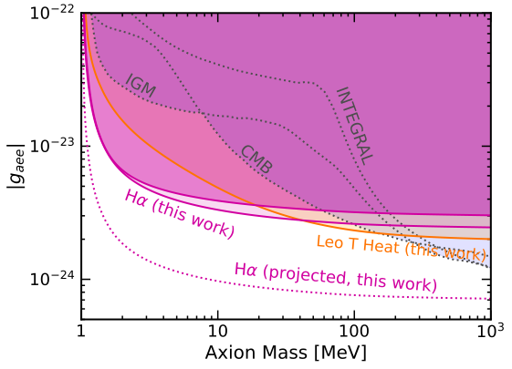
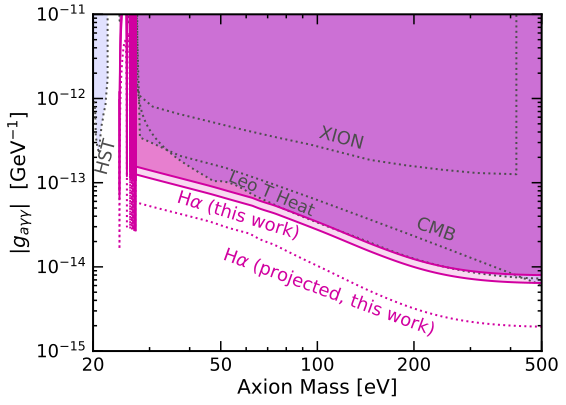
图注：Leo T的MUSE/VLT Hα观测给出的95%置信水平轴子耦合限制：左图为电子对衰变对应的电子耦合绝对值，右图为双光子衰变对应的光子耦合绝对值，横轴为轴子质量。实线为当前限制，浅色/深色阴影分别对应NFW/Burkert暗物质剖面，点线为ELT/HARMONI示意预测；橙色为本文Leo T加热限制，灰色为既有约束。右图约24.2—27.2 eV的窄结构来自Lyman系列光激发共振。
怎么看这张图：先区分当前实线与未来点线，再比较指定质量范围内的提升；窄共振的最强改善不能推广到整条质量轴。 展示两衰变通道的核心约束与剖面不确定性。
来源与置信度：arXiv HTML；source verified；https://arxiv.org/html/2611.23385v1/Axions_gaee.svg；https://arxiv.org/html/2611.23385v1/Axions_ga2gamma_subkeV.svg
图4
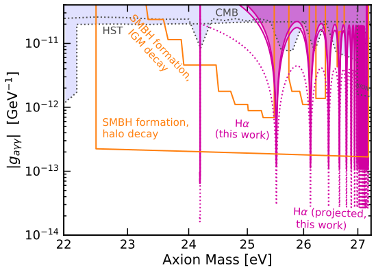
图注：放大低质量区的光子耦合限制：实线为MUSE/VLT Hα的95%置信水平限制，浅色/深色阴影对应NFW/Burkert剖面，点线为ELT/HARMONI预测。橙线以上标示文中选定的晕内与星系际介质衰变所支持的直接坍缩大质量黑洞形成参数区，同时绘出既有约束。横轴为轴子质量，纵轴为光子耦合绝对值。
怎么看这张图：看Hα排除区与橙线以上区域的局部重叠，并注意Lyβ窄窗及其他共振翼部近似；图并未排除全部直接坍缩模型。 展示本地原子线与早期黑洞模型的具体连接及边界。
来源与置信度：arXiv HTML；source verified；https://arxiv.org/html/2611.23385v1/Axions_SMBH.svg
强相关工作
最直接的前作是Leane的Hα暗物质能量注入方案（原文参考文献16，arXiv:2512.09019），本文沿用其Leo T环境、电子两区输运与有限复合处理，并加入轴子具体衰变和新的激发通道。与Wadekar和Wang的Leo T气体加热研究（arXiv:2111.08025）相比，Hα是实际逃逸的原子辐射输出，加热则由气体温度和冷却预算间接限制注入；两者共享部分天体环境，因此不能无条件当作统计独立的约束相乘。
与高红移黑洞的连接使用Lu、Picker与Kusenko的晕内衰变方案（arXiv:2404.03909）和Aggarwal等的星系际介质衰变基准（arXiv:2509.25325）。本文新增的是同一衰变在本地中性氢留下Hα的交叉检验，并没有重新模拟早期坍缩。原子数据可沿NIST数据库和CCC碰撞数据库追溯；这条溯源链有助于区分天体环境不确定性与跃迁/截面近似，尤其适合进一步检验共振翼部的敏感结论。
同一事件 / 同类源线索：
相似工作：
- https://arxiv.org/abs/2512.09019
- https://arxiv.org/abs/2111.08025
- https://arxiv.org/abs/2404.03909
- https://arxiv.org/abs/2509.25325
基础理论 / 方法工作：
相反观点 / 张力线索：
（未提供）
3. A Butterfly Collector's View of Fast Radio Bursts: Repeating Sources Go Quiet within a Few Years
- 来源：arXiv / astro-ph.HE
- 链接：https://arxiv.org/abs/2611.24202
- 作者：Shotaro Yamasaki
- 公告 / 来源日期：2026-11-19
- 阅读层级：重点精读
- 评分：novelty 8/10，importance 8/10，relevance 8/10，final 9.00/10
- 推荐理由：借未见物种估计构造不预设爆发率分布的重复FRB活动衰减检验，五年CHIME资料及后两年外推验证提供具体新证据；寿命、开关及混合群体三解仍退化。
中文题目：像统计蝴蝶一样追踪重复FRB：群体活动在一至三年内衰减
做了什么：作者用CHIME/FRB第二目录检验一个容易被默认的前提：曾经爆发的源，未来是否仍保持相同的平均探测率？他们把同一源在早期窗口被探测的次数分组，用未见物种统计中的Robbins恒等式，从早期的重复次数直接预测这些源在后期会贡献多少次探测。方法不必先假定距离或爆发率分布，但需要前后窗口的曝光按天空位置成比例，并处理短时聚集。
经质量筛选、信噪比切选和同源半天内事件合并后，样本含2686个源、62个重复源。180天窗口的观测/预测比值在短间隔接近1，在一年间隔降到0.57±0.11。固定活动率的泊松模拟无法解释该形状；约三年后永久熄灭、约两年活跃后转入静默、长短寿命混合三种模型均可解释。这里测得的是探测到的重复活动演化，不是中子星物理寿命，也没有证实所有FRB都重复。
为什么重要：重复源是否会长期保持活跃，决定了重复与表观一次性FRB的分类如何解释，也决定用当前爆发率预测未来监测收益是否可靠。本文的进展是用整个巡天的计数关系揭示年尺度变化，而非挑选少数超活跃个例。证据支持恒定平均率模型失效；对永久熄灭、暂时关机和混合群体仍无唯一判别，不能把约三年的模型时间尺度写成所有FRB引擎的寿命。
理论 / 观测 / 仪器方法价值：最可迁移的方法是利用相邻重复次数的计数预测后续事件，再检验预测偏差是否随两段观测的间隔系统变化。这将未知源强分布从零假设的均值预测中消去，并用新源数估计有效曝光比。真正实施时仍需统一探测门槛、合并相关子爆发、在源层面重采样，并用前向模拟刻画统计量的协方差；仅套用公式而不校验巡天响应不能获得相同的稳健性。
为什么应该关注：对高能暂现源和多信使跟踪，本文提示近期活跃与多年前活跃不应自动赋予相同的观测权重。射电重复FRB的年尺度衰减可用于提出更及时的同时段高能跟踪策略，但论文没有测量伽马射线或中微子对应体，也不能把射电活动率直接转成这些能段的探测率。长期静默后是否复现，是比继续拟合同一条衰减曲线更能区分引擎情景的观测问题。
展开详细解读：文章讲解、背景、理论、重点章节、图表与相关工作
文章详细讲解
科学问题：只见一次的FRB可能本来不会再爆发，也可能是重复源但爆发率低、观测不足或后来变静默。直接从重复比例推断引擎种类会混入距离、灵敏度和源强差异。本文改问一个条件性问题：在窗口A已被探测的这一组源，在间隔不同的窗口B是否还表现得像恒定率源？这样无需估计宇宙中所有未被发现的源。
作者怎么做：把A中恰好探测k次的源组成一组，累加它们在B中的探测数。恒定率泊松混合给出一个特殊恒等式：预测值等于A中探测k+1次的源数乘以k+1和曝光比。作者取k=1至3，滑动一对等长窗口，并计算所有窗口位置汇总的观测/预测比R。高重复次数源不进入主统计，以免少量超活跃源支配结果。
关键结果：短间隔R接近1，一年间隔约0.57，长至900天仍在约一半附近，1080天为0.36±0.17。长期与短期R均值之比S=0.530±0.142。恒定泊松模拟10000次无一次达到这么低的S；加入30至180天的随机率波动通常仍不足，只有极强、使源大部分时间近乎沉默的波动模型可以存活。低R本身并非全部证据，随间隔下降的形状更关键。
局限和下一步：三种非平稳模型的最佳拟合差异很小，无法判定静默是否永久。拟合时间尺度也随统计量和协方差处理变化，作者把参数视为指示性结果。应持续检查长静默源是否在旧位置和色散量附近重新出现，并扩展时间基线；单纯提高同一时段的事件数能降低误差，却未必解除开关活动与长短寿命混合的退化。
关键结果是怎么做出来的
第一步是把目录转成可比较的独立探测。原目录五年覆盖2018年9月4日至2023年9月15日；移除excluded_flag=1并要求S/N>10后有3714条爆发。由于一次过境内多次爆发或目录子结构并不独立，同源0.5天内条目合成一次探测。最终2686源中62源重复；把合并阈值改成0.02或0.3天，S最多变化0.011。这里计数的是有爆发的过境，不是所有物理射电脉冲。
第二步控制仪器时间变化。A和B日历长度相同不意味着有效曝光相同。作者用B中相对A新出现的源数，通过Good–Toulmin关系反求每个窗口位置的曝光比t；各间隔平均t约0.93至1.04。在模拟的聚集或停机模型中，新源数预测误差小于约2%。这检验了选用模型下的曝光校正，但比例曝光假设和探测门槛可比仍是应用前提。
第三步测量R的形状并估计误差。主窗口宽180天、每30天滑动，使用从0到1080天的15个间隔。按源而非按爆发抽取500个bootstrap样本，保存整个R向量，所以保留了同源相关性。S的bootstrap标准差0.142与逐源jackknife的0.147相近；90天窗口也得到S=0.49±0.12，360天窗口的零间隔R已低于1，表明窗口内部也能发生活动变化。
第四步检查漏关联。两个真实同源爆发若被目录分成两个单次源，可能伪造后期不再重复。附录C用位置和色散量阈值寻找候选，并用平移色散量估计偶然匹配。即使把全部候选配对合并，S也仅升至0.577；纳入额外候选重复源得到0.534。这些检查未消除衰减，且没有发现候选配对数随时间间隔增长的趋势。
第五步把显著性与物理解释分开。S对恒定泊松模拟的经验尾部上限为p<10^{-4}，而不是某一寿命模型的发现概率。模拟率分布用窗口重复计数调校，因而尾部检验仍依赖模拟族。极端Gamma波动模型可给p=0.22，并未被排除；它意味着多数时段处于极低活动，实质上接近开关模型。
第六步做时间外推。只用前1100天拟合，再预测窗口B位于后续738天的统计，三种演化模型给长期/短期比0.41至0.59，与实测0.41相容；恒定模型为约1.01，1000个模拟无一达到实测。该检验不是独立望远镜复现，仍使用同一目录与早期A窗口，但避免把后期B数据用于拟合，增强了年尺度演化的证据。
展开背景、理论、公式、模型和章节导读
背景知识
快速射电暴是毫秒尺度的强射电脉冲，部分源会再次爆发。探测到一次与本质只爆发一次是不同概念：同一个持续活动的源可以因探测门槛和有限曝光被归为单次源。反过来，即使引擎有长期寿命，它的可见爆发阶段也可能很短。因此讨论人口统计时，必须区分天体寿命、活跃阶段长度和实际探测率。
重复FRB的短时聚集早已可见：活跃源可能在短时间内连续产生很多脉冲，然后长时间没有事件。如果把每个子脉冲都当独立抽样，重复计数将偏高，后续预测也会过高。CHIME是每日过境巡天，每个源只有数分钟主波束曝光，使以过境为单位的统计比逐脉冲统计更适合研究月年至年的变化。
未见物种问题最初问采集一批蝴蝶后还能发现多少新物种。这里每个FRB源相当于一个物种，每次探测相当于捕获一个个体。不同源可以有不同平均率，就像不同物种有不同丰度；Robbins关系允许在未知丰度分布下预测已见类别的未来计数。本文的创新用法是把预测不成立的时间依赖本身作为引擎演化的观测量。
磁星是FRB引擎候选之一，银河磁星的爆发活动可持续数月到数年，因而年尺度活动阶段具有物理解释空间。但这是时间尺度的一致性，不是引擎身份鉴定。已知重复源的16.3天或约160天活动周期通常关联几何窗口；180天窗口会部分平均这些变化，本文讨论的年尺度衰减不应直接等同于轨道周期或进动周期。
基础理论 / 方法脉络
统计的起点是恒定平均率泊松过程。设某源在有效曝光T内的平均探测次数为rT，则探测k次的概率是泊松概率。r已经包含内禀活动、能量分布、距离和仪器响应，不能直接当成引擎每单位物理时间发出的全部脉冲数。对群体未知分布f(r)积分后，得到每个重复次数分组的期望源数。
关键代数是再乘一次后期平均计数rT_B，会把A窗口的k阶泊松权重变成k+1阶。因而未知f(r)在可观测计数之间被消去。这个关系只要求零假设的恒定率与合适曝光比例，不要求f(r)为幂律。实测R的均值零假设与模拟显著性要区分：前者无指定率分布，后者仍要选一族模拟来估计有限样本散布。
短时聚集和长期消退对R的影响不同。若聚集仅发生在远短于窗口间隔的尺度，它抬高早期的多次探测数，可能使所有长间隔R共同偏低，却不自然产生持续下降的形状。源停止活动会逐渐移除后期事件，因此R随间隔下降。S用长期和短期R之比降低整体归一化的影响，但不能保证排除任意形式的非泊松过程。
模型拟合还需要处理强相关误差。同一源、相似窗口反复出现在邻近间隔中，各R点并不独立；将15个误差棒当成独立测量会夸大约束。作者用bootstrap协方差的前三个主模，近似保留水平、斜率和曲率，舍去由小特征值放大的噪声方向。这是经过模拟校验的降维近似，并非15个点提供15个独立自由度。
公式与推导
下面前六步沿论文式(1)–(5)及附录A，后两步来自附录B；写出的条件概率是用于衔接的标准泊松背景，不是新增物理模型。令r为有效探测率、T为有效曝光，rT无量纲：
对未知源率分布积分得到A中恰好探测k次的期望源数：
其中f(r)dr是率落在小区间内的源数。给每个A分组源乘以后期平均计数rT_B，再把阶乘改写，即得核心Robbins恒等式：
这一步解释为何需要A中k+1次源数来预测k次源的未来事件。\(t(s)=T_B\)/T_A可随窗口位置s变化；按论文只累加k=1,2,3，得到
分子分母都是计数，R无量纲；恒定率且曝光处理正确时R=1。作者进一步用两个间隔组的R均值构造
S减少整体水平偏差的影响，保留年尺度变化。曝光比则来自A未见而B至少见一次的源，概率分别为exp(-\(rT_A\))和1-exp(-rT_B)：
最后一步把指数展开再识别N_k。论文截断到k=8并解t；附录明确无穷级数在t>1可能发散，因此近1的实际曝光与有限项、模拟检验不能省略。
模型比较令数据与模拟中位向量之差为R-M，采用
λ_m和v_m为三个最大协方差特征值与特征向量，累计约94%方差。网格平坦先验下权重正比exp(-χ²/2)，所以参数区间是在所选模型、网格和降维统计条件下的后验区间。
开关模型中平均活跃时间与静默时间满足论文给出的关系
这里d是占空比，使长期平均率仍为r。在窗口远短于活跃时间的极限，长间隔R趋近d；混合模型对应趋近长寿命比例η。有限窗口必须由模拟前向计算，不能直接把当前平台值当作精确d。
模型拟合 / 应用方法
输入是各间隔的R向量、500次逐源bootstrap协方差，以及每180天窗口的N1、N2、N3和N≥4。用于零假设的模拟率分布取幂律，低端10^{-6}每天，高端与斜率在网格上调校，斜率约−2.3；这使模拟重现有限样本的重复计数。分布选择不进入Robbins恒等式，但进入尾概率、方差和物理模型模拟。
三类模型分别设指数分布的单一活动寿命τ；指数分布的活跃/静默切换，参数Ton和占空比d；以及短寿命τs与长期活跃比例η的混合。活动时段内部均按泊松发射，整体活跃源数平均稳定，每个网格点生成100至200份目录并用同一处理计算R。如此把窗口截断和探测次数选择显式带入预测，避免只拟合一条经验指数曲线。
使用前三协方差模时，开关、混合、单寿命模型最佳χ²分别约0.4、0.5、1.5，恒定模型约16至18。不同演化模型之间的差别不足以排序。单寿命τ=2.9^{+1.1}{-0.9}年，开关Ton=800±400天，混合τs=500^{+300}天；区间均是68%后验，不能当作无模型依赖的活动寿命测量。
附录D用模拟回收检验协方差处理。前三主模给Ton的68%区间覆盖真值约82%至94%，偏保守；完整协方差逆矩阵仅约50%至70%，过度自信。作者同时指出只看比值形状或采用完整逆矩阵会使Ton约落在300至800天，表明统计选择的系统差异不能被单个误差棒掩盖。
最后用时间留出验证与十年巡天预测检查模型是否可辨识。前段拟合能预测后段下降，但开关和混合模型即使十年也可给近似相同R；长期静默源是否重新出现提供额外信息。十年、三倍探测率下的若干sigma差异只是模拟预测，不是当前数据已实现的发现显著性。
重点章节 / 结果段落怎么读
-
§II.1与式(1)–(2)：先明确N是源数、n是爆发/探测数，再看乘rT_B如何把k阶变成k+1阶，这是消去未知率分布的关键。
-
§II.2–II.3及图1：核对窗口宽度、间隔、滑动方式和曝光比估计，理解为何日历等长不足以直接置t=1。
-
§III–IV与附录C：跟踪质量切选、同源半天合并、逐源重采样和漏关联极端处理，检查统计下降是否可被目录操作解释。
-
§V、图3–4与附录B/D：先看三种模型如何生成目录，再看相关协方差压缩及时间留出预测，避免把最佳曲线视作唯一机制。
-
§VI：分开阅读磁星活动阶段、周期几何窗口和出生率讨论；这些是不同层级的解释与条件推断，不是R单独测得的引擎性质。
关键图表与解读
图1
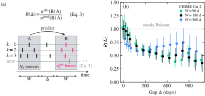
图注：（a）检验布局：两个长度为W的灰色窗口A、B相隔Δ，每条横线代表一个源，短划线为探测。按A中次数k分组，B中粉色探测给出后期观测计数；仅在B初见的灰色探测用于估计曝光比t。（b）CHIME/FRB第二目录的观测/预测比R随间隔Δ变化：90天窗口为绿色方块，180天为黑圆，360天为蓝菱形；为辨认略错开横坐标。误差棒为bootstrap标准差，不显示少于五个窗口位置的间隔。点线R=1为稳态泊松源预期。
怎么看这张图：先看180天黑点从短间隔近1降到一年约一半，再比较不同窗口是否呈现同样趋势。360天窗口的零间隔已低于1，提示窗口内变化；误差点之间相关，不能按独立点计显著性。 直接展示方法与主要观测证据。
来源与置信度：arXiv HTML；source verified；https://arxiv.org/html/2611.24202v1/fig1_concept.svg
图4
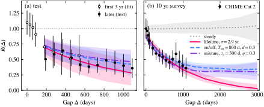
图注：180天窗口下R(Δ)的预测。曲线为模拟目录中位数，色带为第16–84百分位；粉色实线为单寿命，蓝色虚线为开关活动，紫色点划线为长短寿命混合。（a）目录内留出检验：空心圆来自用于拟合的前1100天，实心圆的B窗口位于未用于拟合的后738天，预测按拟合后验加权；灰色点线R=1为稳态。（b）按第二目录探测率模拟十年巡天，采用各族最佳参数；灰线及带为稳态源，黑点为当前目录数据。
怎么看这张图：左图检验前段拟合能否预报后段下降，右图展示将来才能实现的模型区分。开关与混合曲线接近，说明仅延长R曲线仍可能无法辨认机制，需要静默源复现信息。 保留时间留出验证及未来预测与现测区别。
来源与置信度：arXiv HTML；source verified；https://arxiv.org/html/2611.24202v1/fig4_forecast.svg
强相关工作
本文直接使用CHIME/FRB Collaboration (2026)第二目录（doi:10.3847/1538-4365/ae3828），统一巡天使时间计数比较成为可能。Cook等2026工作（arXiv:2605.08410）已注意到41%的既有重复源在后段无新爆发；本文将这一现象变成不指定率分布的预测检验，并显式处理曝光和窗口间隔。因此属于对同一巡天人口统计的深化，而非独立数据集对既有结论的完全复现。
方法基础来自Robbins恒等式和Good–Toulmin未见物种估计，文中列出Good与Toulmin (1956)及Efron与Thisted (1976)等统计工作。物理上，Kaspi与Beloborodov (2017)磁星综述（doi:10.1146/annurev-astro-081915-023329）提供磁活动阶段的背景；CHIME 2020的16.3天周期（doi:10.1038/s41586-020-2398-2）提供应与年尺度变化区分的周期现象。前者不能证明本样本全为磁星，后者也不能直接替代本文的群体演化解释。
同一事件 / 同类源线索：
相似工作：
基础理论 / 方法工作：
相反观点 / 张力线索：
（未提供）
4. A Tight Broad-line Width-Luminosity Relation in Little Red Dots and Its Consequence for Virial Black Hole Masses
- 来源：arXiv / astro-ph.HE
- 链接：https://arxiv.org/abs/2611.24217
- 作者：Haoyu Wang
- 公告 / 来源日期：2026-11-19
- 阅读层级：重点精读
- 评分：novelty 8/10，importance 8/10，relevance 8/10，final 9.00/10
- 推荐理由：统一重拟合29个LRD和匹配对照揭示极窄线宽散布，量化单历元质量近似重述光度及爱丁顿包层下速度张力；对早期黑洞质量推断有实质影响，需全文复核选择效应和几何条件。
中文题目：小红点的宽线为何如此相似：黑洞维里质量可能主要重述谱线光度
做了什么：小红点是JWST发现的一类紧致红色高红移天体，其宽氢巴耳末线究竟来自黑洞引力束缚的高速气体，还是稠密包层中的电子散射，直接决定推断的黑洞质量。作者统一重拟合29个小红点、15个其他JWST宽线源，并用同一流程重拟合224个光度匹配的低红移SDSS类星体。固定宽Hα光度后，小红点单高斯半高全宽的内禀对数散布仅0.054 dex，基线单侧95%上限0.075 dex；同口径类星体为0.123 dex。
这个群体规律意味着，依赖线宽约平方的单历元维里质量，在固定线光度时也只能提供很少额外变化。另一方面，按独立连续谱温度和光度计算的爱丁顿球形光球速度，小红点线宽为其约2.5—3倍。引力解释需要较低爱丁顿比或改变几何，近爱丁顿包层解释则需要非引力展宽。本文没有测得真实黑洞质量，也没有在两种机制中选出唯一答案；散布较小比精确斜率或连续谱零相关结论更稳健。
为什么重要：早期黑洞质量函数常把一次光谱测得的线宽和光度代入本地活动星系标定。若小红点线宽几乎由线光度决定，这样得到的质量函数可能大部分是光度函数的变换，不能自动视为独立的动力学证据。本文把对个例谱形的争论推进到群体的散布预算：任何解释都必须同时说明宽度尺度、很小的源际散布和谱线光度关系，而不只是拟合一条好看的线翼。
理论 / 观测 / 仪器方法价值：方法价值在于统一宽度定义和观测处理，再把测量协方差、重复光谱的额外方差、窄宽分量分解及注入回收选择效应逐项纳入。作者没有让每个源各选一种最佳轮廓后混合统计，因为不同轮廓的FWHM零点不同，这会人为增大群体散布。对任何跨仪器或跨源的相关性研究，这种先统一测量量、再讨论内禀散布的顺序都很重要。
为什么应该关注：对吸积与高能源研究，谱线宽度常被当作引力速度，进而输入质量、爱丁顿比和供能模型。本文提醒这些输入可能共享同一光度信息，不能作为彼此独立的支持。若要把小红点与高能吸积情景联系，先需要独立动力学、时域或多波段证据来识别展宽机制；论文没有给出伽马射线或中微子预言，不宜从宽线直接外推这些信号。
展开详细解读：文章讲解、背景、理论、重点章节、图表与相关工作
文章详细讲解
科学问题：宽谱线并不天然等于高速绕黑洞公转。气体运动、电子多次散射和外流均能把光子分布到较宽波长范围。小红点又有约5000 K的红色连续谱，若解释为接近爱丁顿的包层光球，可由光度与温度独立估计其速度尺度。作者检验线宽群体是否与这些不同物理图像相容，而不是先采用其中一种质量估计再用它证明自身。
作者怎么做：从公开中高分辨率NIRSpec光谱选择分类一致且通过质量标准的源，在Hα附近同时拟合连续谱、窄Hα、固定比例[NII]及宽分量，必要时加吸收屏；模型卷积仪器线展宽函数后逐像素拟合。六种宽度定义逐一对整个样本统一应用，用二维测量协方差拟合线宽—线光度关系和额外内禀散布。
关键结果：29个小红点的基线散布0.054 dex，小于同流程类星体0.123 dex；去掉三颗最亮源后，其余26个与约1760 km/s常宽相容。另一方面，连续谱标定的爱丁顿光球开普勒速度比宽线低约2.5—3倍，约23%—28%的非参数线通量落在该假设光球逃逸速度之外。这里的逃逸阈值依赖爱丁顿比和球形光球，不能不带条件地说这些气体已被证明逃逸。
局限和下一步：线宽绝对值受窄分量分解影响，斜率主要由三颗亮源决定；控制线光度后的连续谱相关性检验主要受一个高杠杆源支撑，删掉后与光球标度也相容。可稳健传递的是较窄的群体宽度分布及其对质量估计信息量的限制；两种物理解释仍需更大样本、独立半径与动力学质量来判别。
关键结果是怎么做出来的
第一步建立同口径样本。合并目录得到115对象、204条光栅谱，177条覆盖Hα；宽分量需S/N≥5、相对仅窄线模型ΔBIC≥6、宽度超过仪器分辨率、不碰关键边界、约化χ²<2且收敛。多条通过的光谱取最高信噪比，最终29个小红点与15个其他宽线源，红移和线光度范围均在正文表1列出。这是被目录分类与观测质量选中的样本，并非所有小红点的无偏普查。
第二步确保散布不是宽度定义混用。29个小红点中25个由Lorentz或指数轮廓给出更低BIC；但按每源最佳轮廓混用，会因不同FWHM零点而把散布增至0.111 dex。统一使用同一种定义时，五种指标给0.051—0.076 dex；双高斯因多数谱不能独立识别核和翼而更分散。单高斯在此是统一摘要量，不代表真实物理轮廓一定为高斯。
第三步用相同拟合做对照。直接取SDSS目录多高斯宽度会得到0.208 dex，改用同一单高斯流程后224个通过对象为0.123 dex，仍约是小红点的2.3倍。仅有15个JWST对照时，去掉最宽的两个对象，类别差的95%区间可跨零；因此总体比较不能只依靠这个小控制组，SDSS与另一公开JWST拟合表提供了更重要的支撑。
第四步校准形式误差之外的变化。九个小红点有重复光谱，同光栅与全部配对差异分别要求额外约0.044、0.060 dex的单谱误差底。将它们计入后，分配给源际内禀散布的份额更小。不同光栅间有系统宽度偏移，最高信噪比选择也偏向较窄拟合；选择最低信噪比合格谱、减半仪器线展宽、改变窄线约束后，散布仍较小但具体上限改变。
第五步检查选择与谱形失配。注入0.10 dex母体散布并按完整规则回收，300份不同轮廓模拟中仅3份达到基线0.054 dex；扩大到49个切选前模板也难制造如此窄分布。但模拟不含吸收，且只用形式像素噪声，约化χ²规则从不剔除模拟，所以不能宣称消除了全部选择效应。正文给约0.10 dex保守上限，最宽拟合窗口的95%区间仍可到0.119 dex。
第六步把经验关系翻译成物理预算。轨道模型必须将质量/半径比与视角的散布控制在总线宽散布内；近爱丁顿包层必须用散射或外流补足速度尺度，同时保持光深或温度相似。两者都预测经常用维里公式算出的质量紧随线光度，因此质量估计的窄分布并不替任何一种机制提供独立确认。
展开背景、理论、公式、模型和章节导读
背景知识
小红点得名于JWST图像中的紧致红色外观，常见于高红移，具有宽巴耳末线和较红的光学连续谱。颜色、紧致性和宽线暗示强能量释放，却不唯一决定中心天体质量。红色连续谱可以来自包层光球，也可以有尘埃遮蔽等解释，因而用连续谱定义物理半径时必须写出模型条件。
在常规活动星系中，若宽线区气体受黑洞引力控制，速度与GM/R相关。单历元维里法用谱线宽度代表速度，再用经验半径—光度关系代替无法直接测量的R，给出质量。它的校准依赖本地样本和几何因子；把它应用到物理环境不同的小红点，需要检验线宽是否仍代表相同的动力学量。
电子散射则能在无需相同大尺度气体速度的情况下产生宽翼。光子与具有热运动的电子散射后改变频率，多次散射使轮廓变宽；宽度由电子温度、光学深度以及原始线核共同决定。Lorentz或指数翼的拟合较好本身不是散射唯一证据，因为分层动力学宽线区也能产生类似翼形。
群体散布提供了另一条约束。即使两个模型都能拟合单个对象的线宽，它们对视角、半径、质量、温度和光深在不同对象之间能变化多少提出不同要求。观测散布需先扣除测量噪声，但未建模的仪器和谱形误差也会占用这份预算。本文因此把经验散布、物理解释与质量估计的信息冗余分成三个层级。
基础理论 / 方法脉络
dex是十进对数单位，0.054 dex对应的是相对宽度的较小源际变化，而不是每个源都有5.4%的直接测量精度。作者在固定Hα光度后拟合剩余宽度散布，测量误差由单谱拟合协方差提供。由于宽度和光度从同一谱提取，它们通常相关；忽略交叉协方差会错误估计关系的残差方差。
轨道解释把FWHM写成几何因子k乘开普勒速度。对数后线宽变化由log k和二分之一log(M/R)相加；若二者独立，方差相加形成散布预算。这个独立性不是物理定律，若人为相关抵消，限制可以变化。薄盘随机小倾角会带来很大sin i散布，较厚速度场或靠近赤道的窄视角区间则可减小它。
球形光球给Rph随Lph的平方根、温度负二次方变化；再在给定爱丁顿比下把质量换成光度，开普勒速度便随Lph四分之一次方与温度一次方变化。这使连续谱产生独立于线宽的速度预测。观测FWHM比该速度大，不直接证明质量大，因为爱丁顿比、发射半径与几何或非引力展宽都可改变关系。
最后是估计量的信息问题。经验质量公式约为线光度0.47次方乘宽度2.06次方；如果宽度在固定光度后几乎不变，估计质量也必然几乎不变。这个结论无需先决定宽线来自轨道还是散射，却只约束该估计量，不能把小质量散布等同真实黑洞群体质量散布很小。
公式与推导
先用论文式(1)建立经验模型，所有log均为十进对数，L是宽Hα光度，L0为参考光度：
宽度和光度误差来自同一谱，式(2)给残差方差
交叉项不是附加物理散布，而是共同测量造成的误差相关。对a边缘化并在b和σint网格求后验，才得到基线0.054 dex。
轨道解释采用论文§V.1的定义
在固定线光度且log k与log(M/R)独立时，式(4)为
因此即便把全部0.075 dex预算留给M/R，其散布也至多0.15 dex；视角一旦占据预算，允许范围更窄。若两者相关则需加协方差项，这是上述边界的适用条件。
接着由球形黑体关系和电子散射爱丁顿关系（论文§V.2）连接连续谱与动力学：
σSB为Stefan–Boltzmann常数，κes为不透明度，λ为相对于所用包围质量的爱丁顿比。在λ=1、R=Rph的参考情形，消去M和R得到式(5)：
采用κes=0.398 cm²/g；不同成分改变系数。推广到一般λ与发射半径R，式(6)及其代数重排为
代入宽度比2.5—3及标准几何后才得到约0.10—0.30的λ上界，而且还要求R≥Rph。极端边缘环、极区空腔或非光球连续谱均改变该推断。
质量估计的信息压缩来自论文§V.4：
这是对计算出的维里质量的条件散布，而不是独立真实质量约束。将经验线宽斜率代入，还可得Mvir对L的指数0.47+2.06b，此为教学代数整理，用来展示为何两者携带高度重复的信息。
散射解释用文中引用的翼尺度及其对光深的灵敏度：
τe=2—3时D约0.70—0.78；若其余因素固定，σlogτ≤σint/D约0.10—0.11 dex。加入未散射线核会改变D，故附录C的核稀释检验不能省略。
模型拟合 / 应用方法
谱拟合在Hα附近±5000 km/s内同时处理线性连续谱、窄Hα和[NII]双线以及宽Hα。窄分量宽度限30—600 km/s，宽分量350—12000 km/s；卷积随波长变化的仪器线展宽函数并积分像素。只有BIC改善超过6才加乘性高斯光深吸收屏。宽线光度为吸收前的宽分量，未作尘埃修正，因此不能随意替换为消光校正光度而沿用斜率。
群体模型给斜率b在−1至1、内禀散布0至0.6 dex的均匀先验，截距解析边缘化。每个源带自己的宽度—光度协方差；用真实光度的层级高斯先验作对照后，小红点参数基本不变。默认区间为等尾95%后验，明确写出的上限是单侧95%；单谱表1误差则为1σ，两者必须分开。
重复谱揭示形式误差遗漏：仪器光栅、狭缝损失与谱形系统变化会使同源宽度在多次观测间变化。将其作为加性误差底或与形式误差成比例的随机效应，内禀散布上限约0.049—0.062 dex，但只有加性模型与零散布相容。正文后续主要沿用形式误差口径，并以多种拟合变体给保守界限，不能挑最小误差底结果当作唯一精度。
窄线分解是重要退化。自由窄线在很多源落到下界，在两颗亮源却碰到上界并吸收线核，导致宽分量更宽；用[OIII]约束窄线后散布升到约0.072 dex，重新套用吸收边界可到0.075 dex、单侧上限0.102 dex。这也削弱了精确斜率，而较窄分布仍存在。应把小散布与特定斜率的证据强度分开。
光球标度检验使用已发表大气或修正黑体参数，与线宽交叉匹配，部分子样本重叠；未发表的Lph–Teff协方差置零。固定Hα光度后的Lph偏斜率接近零，但主要由RUBIES-UDS-29813提供杠杆，删去后与光球标度模拟中位值也一致。这是有条件、尚需增样本的检验，不是独立强排除光球模型。
重点章节 / 结果段落怎么读
-
§II.1–II.3：核对宽线、窄线、吸收和仪器响应的定义，区分单高斯摘要宽度与真实谱形，并明确最终样本如何筛出。
-
§III与图1–2：同时读取基线散布、去掉三颗亮源后的变化，以及相同流程的SDSS对照；不要只看标题中的斜率。
-
§IV及附录B：对照重复谱、窄线分解和注入回收，尤其读注入未含吸收与真实额外噪声的限制，判断0.075与约0.10 dex两种界限。
-
§V.1–V.3及图3–4：从散布预算走到光球速度尺度，每次推断质量或爱丁顿比都保留几何、发射半径和包围质量条件。
-
§V.4与附录A/C：分别检查估计质量的信息冗余、高杠杆源与散射线核效应；它们限制的是不同物理命题。
关键图表与解读
图1
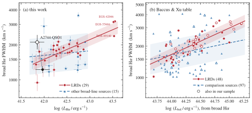
图注：宽Hα线宽随光度的关系。（a）本文29个小红点为圆点、15个其他宽线源为三角形，均用同一单高斯流程，误差棒为1σ；标签标出主导斜率的三颗最亮小红点。菱形为不在主样本中的A2744-QSO1，已校正透镜放大，空心和实心分别为窄线自由与固定150 km/s。（b）Baccus与Xu表格，横轴为由Hα换算的总辐射光度，空心标记与本文重叠记录，横向轻微错开避免表格舍入重叠；略去误差棒。线与阴影为关系后验中位和形式误差口径的正负内禀散布。
怎么看这张图：先看固定光度处小红点分布是否窄，再看三颗亮源对斜率的影响。两面板光度定义不同且样本重叠，不是两次完全独立验证。 展示最稳健群体规律及斜率脆弱性。
来源与置信度：arXiv HTML；source verified；https://arxiv.org/html/2611.24217v1/Figure1.svg
图4
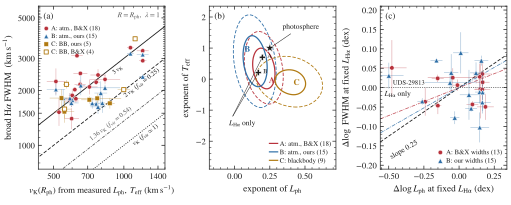
图注：宽Hα与由连续谱光度、温度计算的爱丁顿光球开普勒速度比较。（a）圆、三角及方块表示不同大气/修正黑体子样本和线宽来源；比较线对应维里因子1、0.54、0.25及三倍开普勒速度，横误差含光度与温度传播。（b）线宽对光球光度和温度指数的联合68%实线、95%虚线后验，星号为光球标度(0.25,1)，加号为仅随Hα变化诱导的轨迹。（c）控制Hα光度后的光球光度偏残差，对照光球斜率0.25、模拟回收中位斜率与零斜率；标注点为高杠杆源RUBIES-UDS-29813。
怎么看这张图：速度尺度偏移与缺少连续谱偏相关是两个检验。前者依赖λ=1和球形光球；后者删掉标注源后可与光球预期相容，不能由平坦残差宣称排除全部包层解释。 并列物理速度尺度与其条件性检验。
来源与置信度：arXiv HTML；source verified；https://arxiv.org/html/2611.24217v1/Figure4.svg
强相关工作
Baccus与Xu (2026，doi:10.3847/1538-4357/ae7de7)的JWST宽线普查提供另一套公开拟合，与本文有大量同源和同一DJA降采样数据重叠，因此支持测量流程比较，却不是完全独立观测重复。Shen等(2011，doi:10.1088/0067-0049/194/2/45)的SDSS目录提供低红移对照；本文重拟合同口径后散布从目录值明显下降，正说明方法差异不能被误当成天体群体差异。
Croom (2011，doi:10.1088/0004-637X/736/2/161)已讨论类星体线宽对维里质量提供多少额外信息，本文把这个问题推进到更窄的小红点群体。机制比较则连接Rusakov等(2026，doi:10.1038/s41586-025-09900-4)的稠密电离茧散射解释与Juodžbalis等(2026，doi:10.1038/s41586-026-10579-4)的个例动力学质量；后者A2744-QSO1并不在主样本，且本文说明其单高斯核翼分解不稳定，不能用此一例简单推翻或证实整个人口统计关系。
同一事件 / 同类源线索：
相似工作：
基础理论 / 方法工作：
相反观点 / 张力线索：
（未提供）
5. Early spectra of AT2017gfo from scaled 3D merger ejecta: mass--velocity distribution, 3D structure, and treatment of line opacity
- 来源：arXiv / astro-ph.HE
- 链接：https://arxiv.org/abs/2611.24627
- 作者：Luke J. Shingles, Christine E. Collins, Vimal Vijayan, Andreas Flörs, Oliver Just, Fiona McNeill, Gerrit Leck, Andreas Bauswein
- 公告 / 来源日期：2026-11-19
- 阅读层级：重点精读
- 评分：novelty 8/10，importance 8/10，relevance 8/10，final 9.00/10
- 推荐理由：校准原子数据的三维辐射转移同时约束AT2017gfo早期光变和谱特征，并量化维度及线不透明度引起的亮度和谱偏差，显著推进千新星成分推断；质量速度缩放非完全流体自洽，需全文明确边界，建议精读。
中文题目：AT2017gfo三维辐射转移：质量、速度与谱线近似怎样共同改变千新星解释
做了什么：作者用ARTIS把双中子星并合的三维动力学抛射物推进到千新星辐射阶段，检验为何能匹配总光度的模型仍会给出错误光谱。基础模拟只有0.005个太阳质量，作者将其质量增至0.04个太阳质量，再把所有速度减半，同时保留不均匀成分和三维结构。增质量本身改善光变，却使早期谱过红；进一步减速后的模型较好再现AT2017gfo在1.4、2.4天的主要谱形，3.4天仍偏红且光学不足。这里的缩放是诊断实验，并非自洽模拟证明并合必然产生该抛射物。
同一研究还隔离两类系统差异：方位角平均成二维后，约1天光度比三维母模型低约三倍；使用膨胀不透明度时，总光度误差可以很小，局部谱通量却高出约10—20%。因此，从千新星光谱反推元素和质量时，几何结构与辐射算法都必须进入误差预算。
为什么重要：千新星是快速中子俘获产生重元素的重要观测窗口，但观测的是经过大量混线与再处理的逃逸光子，而不是元素清单。本文把波长校准的镧系原子数据、随时间变化的核组成及三维辐射转移放到同一框架，显示相同总质量和平均组成也能因空间混合方式而产生很不同的颜色。其推进是给出可检验的模型退化与算法偏差，不是唯一确定AT2017gfo的成分。
理论 / 观测 / 仪器方法价值：最可复用的是控制变量顺序：先在同一流体结构中分别改质量与速度，再用同一三维模型做二维平均，最后固定原子数据比较逐线、分箱和再发射处理。这样可把“原子数据不同”“几何不同”和“数值近似不同”分开定位。对多信使暂现源建模，值得借鉴同时要求光变、谱峰、谱谷及时间演化一致，而不以一个积分光度拟合代替机制检验。
为什么应该关注：GW170817后的电磁辐射连接并合抛射物、核合成与后并合吸积盘外流。这里约一半质量低于0.09倍光速的分布与较慢、较大质量的后并合外流相容，却不能区分黏滞盘风、中微子风或磁驱动风各自贡献。关注重点是未来自洽三维模型能否同时复现这种速度分布和局部低镧系区域，以及非局域热平衡是否修复后期光学缺额，而非将此结果直接转写为高能伽马预测。
展开详细解读：文章讲解、背景、理论、重点章节、图表与相关工作
文章详细讲解
科学问题：AT2017gfo的总光度可以用不同质量、速度和不透明度组合近似匹配，但谱峰的位置和谱谷深度提供更严格约束。作者追问，一个来自真实并合三维结构、而非球对称手设成分壳层的模型，经过哪些有限改变才接近早期数据；同时检验计算上常用的角向平均和谱线分箱会不会把物理推断带偏。
作者怎么做：以两颗1.35太阳质量中子星的SFHo状态方程模拟为基础。流体只演化到并合后20毫秒，因此没有完整后并合风；随后假设同源膨胀并在0.1天映射到网格。ARTIS跟踪放射性衰变、能量沉积、蒙特卡罗辐射包及逐线相互作用，用约4900万条跃迁的AD3数据计算光谱。所有展示观测量都选负z极轴37度内的观察方向，并采用40 Mpc距离。
关键结果：只把密度乘八，可以把1.5—5天总光度带到观测约30%以内，却在1.4天让谱峰落在约10000埃而非观测5500埃。再把速度减半后，密度进一步增大、放射性能量更容易沉积、辐射面更小，光谱变蓝并恢复2.4天的双峰结构。把同一个三维模型平均成二维却又变暗、变红，说明平均组成无法保留低不透明度通道的作用。
局限和下一步：缩放没有重新计算并合流体或核反应轨迹，慢物质仍沿用动力学抛射物成分；模型只测试一组质量与速度因子，也不具有唯一性。LTE、缺少部分离化级以及未校准的Th III数据都会影响谱峰归属。完整三维动力学加后并合演化、非LTE及更完整原子数据，是把这种诊断模型转化为可靠物理推断所需的下一步。
关键结果是怎么做出来的
证据链首先从能量预算开始。未缩放模型在约1天比AT2017gfo暗近一个数量级，且下降过快；增质量既增加放射性物质也提高捕获效率，改善光变。速度减半不增加放射性质量，却使1.4天伽马热化效率由约0.30升到约0.55，1—4天总沉积功率增加约30%。这说明“同一质量产生同一光度”并不成立，能量沉积取决于密度与逃逸。
第二步用谱形拆解积分光度退化。图5显示增质量模型在1.4天过红，速度压缩模型则在1.4、2.4天接近5500—15000埃区间的通量，但约9500埃的谷偏深，蓝端仍不足。到3.4天，5500—7500埃只达到观测约一半，5500—15000埃积分却约达八成，故偏差主要是颜色和再分配，不能简单靠整体增亮补救。
第三步以逃逸辐射包的最后一次发射和吸收定位谱线贡献。10500埃峰主要来自Sr II三重线；13500埃肩部有La III和Gd III贡献，Pr III在模型光学双峰中有作用。该记账只说明模型中哪些离子在最后加工逃逸光，不等于移除某离子后的因果响应，更不等于观测中的唯一元素识别。模型的Pr III局部峰甚至对应观测宽峰中不同形状，作者没有把它认定为检测。
第四步比较二维和三维。二维径向质量分布及平均组成基本保持，但低镧系物质的比例从三维约四分之一降到仅几个百分点，密度对比也被抹平。二维沉积功率与三维只差几个百分点，早期光度却差约三倍，因此主因在辐射被困的时长和逃逸路径。二维网格分辨率加倍只改变几个百分点，排除了简单网格过粗作为主要解释。
最后固定速度压缩模型比较六种辐射算法。膨胀不透明度及单线光深封顶为1的分箱结果彼此相近，在部分谱谷比逐线宏原子基准高约20%；封顶升至5、10时两结果趋于一致且过量消失。总光度接近包含两个反向效应的抵消：热再分配延迟逃逸，强线光深饱和却让部分光子过早穿过。不能据积分光度相近就判定谱线算法已等价。
展开背景、理论、公式、模型和章节导读
背景知识
并合抛射物中的富中子核快速俘获中子，形成不稳定重核；之后的衰变把核能变成粒子和伽马射线，再经沉积转成可见与红外光。这类千新星的光变同时记录核加热率、热化效率和光子扩散，单独看到衰减曲线不直接给出某一元素丰度。
镧系离子的复杂能级产生大量跃迁，很多谱线互相重叠，形成类似连续谱的混线背景。少量镧系物质也可能显著改变不透明度，因此把富镧系与贫镧系区域混成同一个平均丰度，会改变光子所经历的路径，即便平均值没有变化。
动力学抛射物在毫秒阶段由潮汐与激波抛出，后并合物质则可由盘风、残骸风等较慢释放。本文原始流体演化过短，缺少后一部分；质量增大及速度压缩意在探索总抛射物可能需要的分布，并未模拟具体风机制，也不能以其质量因子直接测量盘风质量。
谱线识别还依赖原子波长。纯理论能级误差可把跃迁移到错误波段；实验能级校准主要纠正波长，跃迁强度与数据完备性仍有理论误差。AD3虽改善了镧系波长，但Th只含Th III且未校准，因此模型中显著的钍贡献尤其不能当作已观测到锕系元素。
基础理论 / 方法脉络
同源膨胀意味着每个流体元近似保持速度，半径随时间线性增长、密度按时间立方反比下降。对同一质量减小速度，在固定时刻压缩体积并提高密度，这同时增强放射性产物沉积和光学光子的滞留，故不能只考虑更低速度的多普勒位移。
颜色还取决于辐射面面积。在相同时间，较小光球速度意味着较小半径；若总光度不降低，单位面积辐射更强、有效温度更高。本文的压缩模型在约0.4天后还更亮，这两项一起解释“速度更低而光谱更蓝”，与简单把减速等同于更红的直觉不同。
逐线Sobolev处理利用大速度梯度：辐射包在共动波长经过某条线的静止波长时才遇到该共振。强线几乎必然使包相互作用。膨胀不透明度把这个相互作用概率均摊进波长箱，能近似平均事件次数，却不一定保持无相互作用穿透概率；两者对稀疏强线尤其不同。
宏原子法跟踪吸收后的能级转移及荧光，允许较短波吸收后在较长波释放能量。热再分配直接按局部温度与吸收不透明度抽样再发射，失去吸收跃迁的记忆。这里“再分配”指光子吸收后的重发射，“热化”指衰变能向气体沉积，两者发生在不同环节，不能混用。
公式与推导
先用同源膨胀连接缩放与颜色。下面前两式是对§2.3和§5.1的教学整理，不是额外流体拟合。令质量缩放为 $a$、速度缩放为 $b$，同一时刻有
本文先取 $a=8$，再取 $b=1/2$，所以压缩模型相对原始模型密度增至64倍；相对仅增质量模型为8倍。动能按质量和速度平方变化，故
这给最终动能为原模型两倍，与表1的 $2.51\times10^{50}$ 到 $5.01\times10^{50}\,{\rm erg}$ 一致。对于有效辐射面，§5.1关系可写成
$v_{\rm ph}$ 是光球速度而非统一流体速度，$\sigma$ 为斯特藩—玻尔兹曼常数。此标度解释趋势，不代替非灰三维输运。
转向论文式1—2：膨胀使共动波长跨过宽度 $\Delta\lambda$ 的箱，一级 $v/c$ 近似下路径和光深为
$\kappa$ 的单位为面积每质量；乘密度和长度给无量纲光深。论文式3将每条线的Sobolev光深 $\tau_i$ 转成相互作用概率后相加：
论文式4的未封顶线分箱则保留光深本身：
弱线满足 $1-e^{-\tau_i}\simeq\tau_i$，两方法趋同；强线则不同。论文式5及§2.4.2给出穿透概率：
一个光深20的孤立强线，在逐线法中穿透率约 $2.1\times10^{-9}$，膨胀近似却约0.37。这不是靠缩窄箱宽就自动消失的误差。论文式6为降低计算成本引入每条线的封顶值：
封顶5、10对应孤立强线穿透率约0.007与 $4.5\times10^{-5}$，本文用两者输出相近作为收敛证据；其他模型需重新检查。最后论文式7定义热再分配的抽样权重：
$B$ 是普朗克函数，bb和ff分别是束缚—束缚及自由—自由吸收；不含电子散射。该权重让高温、高不透明度波段较易获得重发射能量，可能延长后续逃逸时间，连接到光变与局部谱偏差。
模型拟合 / 应用方法
本文是有限模型网格的受控前向比较，不是对质量、速度及元素丰度做完整贝叶斯反演。输入为同一个并合模拟、核反应网络和AD3原子数据；质量因子8与速度因子1/2是人为测试值。不能把0.04太阳质量或半质量速度0.09c写成具有统计置信区间的最佳测量。
观测比较采用经过银河消光修正并移到宿主静止系的VLT/X-shooter光谱，选择1.4、2.4、3.4天三个具有一致近红外覆盖的历元。模型固定40 Mpc；距离约6%的不确定性对应通量约12%，两套早期总光度估计还可相差40%。这些口径提醒读者：小于十几个百分点的模型差异未必能被绝对通量单独区分。
数值验收包含两个层次。二维25×50与50×100网格对比限制网格误差；线分箱封顶1、5、10对比限制强线饱和误差。未封顶计算成本太高，没有完成，所以“未封顶应相近”属于由5与10收敛推测，不能写成已直接跑出未封顶结果。基准逐线宏原子计算使用约四亿辐射包，本解读没有重跑该大规模计算。
原子归属通过最后相互作用统计而非逐元素删去试验，不能提供唯一识别的似然。主要剩余偏差是早期蓝端不足、9500埃谷过深与3.4天光学缺额；Th III离化级缺失可能夸大红翼，非热离化可能减轻光学线遮蔽。真正后续拟合应同时改变成分和几何，并把原子数据、距离与非LTE作为系统误差，而非只缩放归一化。
重点章节 / 结果段落怎么读
-
§2.1—2.3与表1：先明确原始流体只到20毫秒、缩放没有补做核反应演化；跟踪质量、速度、密度和动能如何改变，避免把实验模型当自洽并合预测。
-
§2.4—2.5与表2：抓住“无相互作用概率”和“平均事件次数”的区别，再读封顶线分箱为何介于精度与成本之间。热再分配与核衰变热化须分开。
-
§3.1—3.3与图4—7：先比较光变，再比较三时刻光谱，最后读离子分解。谱线归属只是最后相互作用记账，Pr与Th均有明确保留。
-
§3.4、§4与图8—10：用二维网格收敛和辐射算法对照排查数值因素；注意二维平均同时改变成分混合与密度结构，无法分别测出两者权重。
-
§5.3—5.5：核查“不需独立贫镧系成分”的时间、波段和三维条件；1.4天以前的蓝光不在本次光谱检验范围。
关键图表与解读
图5
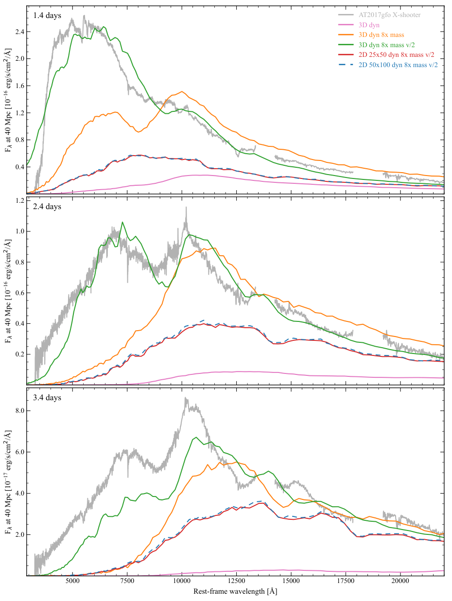
图注：极向观察的光谱比较：从上到下为并合后1.4、2.4和3.4天，展示未缩放三维、两种缩放三维及二维模型，与40 Mpc处AT2017gfo的实测谱比较。波长均处于宿主静止系。
怎么看这张图：对比只增质量与再减速两条谱线，判断光变相近是否也意味着谱峰和谱谷一致；3.4天光学缺额是模型剩余问题。 直接检验质量速度对谱的核心结论
来源与置信度：arXiv PDF；source verified；https://arxiv.org/pdf/2611.24627#page=11
图6
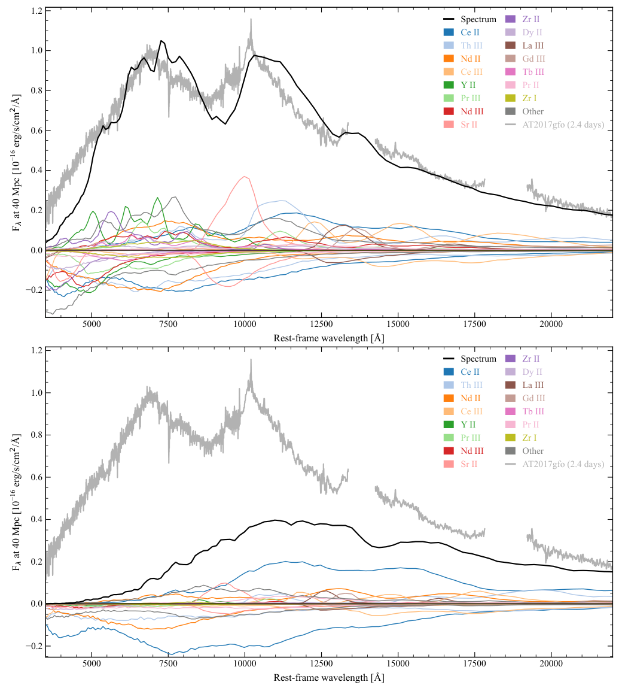
图注：速度压缩模型在2.4天的极向谱，顶部为三维，底部为25×50网格的二维平均。按逃逸辐射包最后一次发射或吸收所属离子分解；正值是发射贡献，负值是吸收贡献，“Other”为其余离子，灰色为实测谱。这些量不是抛射物内部总发射或总吸收。
怎么看这张图：先看Sr II近红外峰及二维时的削弱，再看复杂混线；不能把某离子着色贡献当作独立观测检测。 三维平均及离子识别的证据
来源与置信度：arXiv PDF；source verified；https://arxiv.org/pdf/2611.24627#page=12
图10
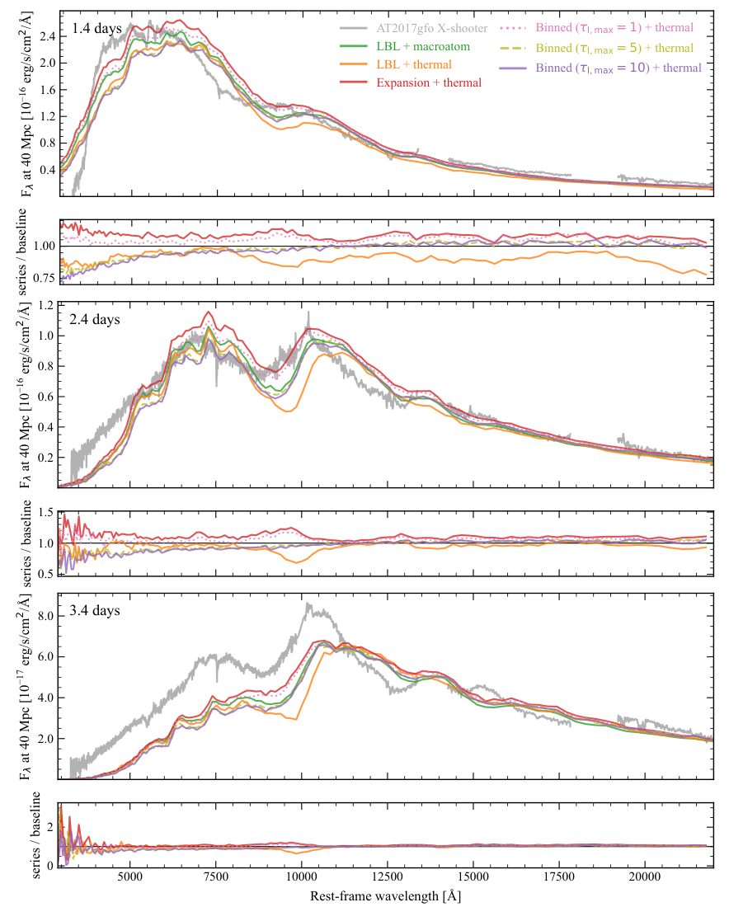
图注：同一个三维速度压缩模型在1.4、2.4、3.4天的极向光谱，比较逐线宏原子、逐线热再分配、膨胀不透明度及单线光深封顶1、5、10的线分箱处理。观测采用40 Mpc距离；每个历元的下方小面板给出相对逐线宏原子谱的比值。
怎么看这张图：约9500埃谷的相对差异比积分光度更敏感。封顶5与10趋同且不再出现膨胀近似的通量过量，说明不是所有分箱都具有同一偏差。 直接展示辐射近似的系统误差
来源与置信度：arXiv PDF；source verified；https://arxiv.org/pdf/2611.24627#page=17
强相关工作
与Shingles等2023年三维模型相比，本文沿用其动力学结构，但用质量与速度缩放解决过暗和演化过快的问题，并更新镧系原子数据；原工作及勘误是理解基线的必要入口（doi:10.3847/2041-8213/acf29a；勘误doi:10.3847/2041-8213/ade719）。Watson等2019年的Sr II识别提供了10500埃峰的重要观测解释（doi:10.1038/s41586-019-1676-3），本文在多离子三维混线背景中得到该三重线的强贡献，但没有据此排除所有其他机制。
算法比较应联系Fontes等2020年的线分箱方案（doi:10.1093/mnras/staa485）与Lucy的宏原子方法（doi:10.1051/0004-6361:20011756）。本文并未判定所有分箱方法都会高估通量：偏差主要对应强线饱和的膨胀不透明度，保留完整光深或足够高封顶的线分箱没有同样过量。不同代码是否采用扩散加速，决定能否承担高光深反复作用的成本，不能只按算法名称比较效率。
同一事件 / 同类源线索：
相似工作：
基础理论 / 方法工作：
相反观点 / 张力线索：
（未提供）
6. Investigating the Impact of SAX J1808.4-3658's Very Bright Thermonuclear X-ray Burst on the Accretion Disc with NICER
- 来源：arXiv / astro-ph.HE
- 链接：https://arxiv.org/abs/2611.24635
- 作者：A. C. Albayati, D. Altamirano, A. Beri, T. Boztepe, D. J. K. Buisson, T. Güver, G. K. Jaisawal, C. Malacaria
- 公告 / 来源日期：2026-11-19
- 阅读层级：重点精读
- 评分：novelty 8/10，importance 8/10，relevance 8/10，final 9.00/10
- 推荐理由：NICER强热核爆发同时分离反射与演化持续辐射，并给出尾段吸收及盘温升高的光谱证据，对爆发反馈吸积盘有具体推进；盘膨胀遮挡是解释而非直接成像，参数退化需全文核查，建议精读。
中文题目：SAX J1808强热核爆发：把反射、持续谱变化与盘加热分开检验
做了什么：作者重新分析NICER于2019年8月21日观测的SAX J1808.4−3658强热核爆发，重点解释1.5 keV以下的软过量。他们在两个爆发峰分别加入中子星黑体、盘反射和可变持续辐射，发现联合描述优于只让盘黑体变化或只加入反射；首峰持续谱缩放因子约60。把分析延长到爆发后200—640秒，盘温从基线约0.68 keV升至早期尾段约0.78 keV后回落，并需要更大的吸收柱，提供与照射加热及周边物质响应相容的谱证据。
数值使用须保留原文冲突：作者多处称吸收柱增加34%，但表1与表5的1.66到2.42（单位均为每平方厘米10的21次方）对应约46%；表4首峰两分量通量也不能复算其报告的反射比约0.8。因此本文支持研究多种同时发生的谱变化，但不宜据这些精确比值认定盘厚度、遮挡比例或吸积率。
为什么重要：热核爆发相当于对中子星周围吸积环境施加一次快速照明实验。传统方法把爆发前持续谱当作固定背景，会把盘反射、加热和吸积响应错误归入表面黑体。本文的重要增量是将反射与持续谱缩放同时纳入，并在表面爆发不再压倒其他成分的长尾阶段寻找独立盘温和吸收变化，从而使“盘会响应爆发”得到更具体的时间与能谱检验。
理论 / 观测 / 仪器方法价值：方法上值得借鉴的是按谱稳定性选峰区、用多个嵌套程度不同的模型检查软残差、再用晚期弱爆发谱降低成分退化。联合模型中的缩放常数只是持续谱形状固定时的经验强度参数，不是直接吸积率计。对其他瞬变照射问题，同样应把几何反射、热结构变化与源本征亮度分开，以残差和可识别性决定哪些物理量真正被数据约束。
为什么应该关注：SAX J1808是吸积毫秒脉冲星，连接表面核燃烧、内盘及磁层，适合积累双星供能到辐射之间的基础知识。本文也发现爆发前约150秒缓慢增亮，主要来自1—3 keV，但未分清来自盘还是恒星表面。它提示值得检验磁约束边缘稳定燃烧，却没有测到完整毫赫兹准周期振荡，更不能从一次上升段推出稳定周期或高能伴随信号。
展开详细解读：文章讲解、背景、理论、重点章节、图表与相关工作
文章详细讲解
科学问题：爆发峰谱中的软光子究竟来自被加热的盘、原有吸积辐射增强，还是照明后的反射？三者在软X射线中高度重叠，单个附加黑体或缩放常数都可能吸收其他机制的贡献。作者利用这次高计数爆发的两个稳定峰和长尾，寻找不同阶段可区分的谱特征。
作者怎么做：先用远离爆发前增亮的一段230秒数据建立持续谱基线，模型包含多温盘黑体与热康普顿化。首峰和次峰分别选择约2.93与3.06秒的高计数、硬度较稳定区间，逐步测试自由盘黑体、反射以及反射加持续谱缩放。吸收和部分康普顿参数固定，反射盘密度、内外半径、倾角也采用给定值，所以被约束的是这些条件下的谱分解。
关键结果：单独变化盘黑体产生温度下降和表观半径剧增的结果，难以按简单受照加热解释；加入反射再允许持续谱增强后残差更小。晚期谱的软缺额则要求放宽吸收柱，并以升温后逐步冷却的盘黑体改善拟合。峰区软过量与尾段软缺额不能用同一“所有软光都增加”的解释处理。
局限和下一步：高持续谱缩放不等于吸积率增加60倍，反射比及亚爱丁顿直接黑体光度也依赖分量分配、距离和盘密度。数值表内冲突、软谱退化以及自由离化参数下更复杂反射模型失去约束，限制了几何解释的强度。需要同时覆盖硬X射线、允许物理盘结构响应的模型及更多爆发样本，才能检验盘膨胀、风或其他吸收物质的贡献。
关键结果是怎么做出来的
第一步是防止基线污染。爆发所在指向的持续计数本已比相邻指向高约25%，而起爆前约150秒又从约122升到142计数每秒。作者因此没有直接取紧邻爆发的全部数据当背景，而选距离起爆至少约200秒的稳定段。基线拟合得到盘温0.68±0.04 keV、吸收柱约1.66×10的21次方每平方厘米；这决定后面所说的“变化”参照什么。
第二步用峰区模型检验软过量。Model A仅让盘黑体变化，盘温降至约0.39、0.31 keV，表观盘半径变成约138、168 km，且约化卡方约1.70、1.50。Model B加入反射后改善，但反射分量倾向占据大量软通量；Model C再加入持续谱缩放，作者报告独立丰度版本的约化卡方约0.98、1.12。此比较表明单一附加机制不够，却不能把经验谱成分直接映射为唯一物理过程。
第三步检查参数耦合和模型条件。反射模型的氢密度固定在10的18次方每立方厘米、盘倾角65度、内半径11个引力半径，离化参数可变。作者还跨两峰和两种模型捆绑铁丰度，得到约两倍太阳丰度及更窄误差；这种联合条件下的误差不能与完全自由版本混用。角图反映选定模型内部相关性较弱，不等于所有模型不确定性已经消失。
第四步转向200—640秒尾段。固定基线时模型在1 keV以下过预测，放开并跨四段捆绑吸收柱后改善，再放开盘温进一步改善，最终卡方293.1/272。盘温前两段约0.78、0.77 keV，后两段约0.70 keV，接近基线。升温约15%与降温轨迹支持受照响应；吸收列值增加约46%，原文若干处写34%的差异必须保留，不能在摘要中照抄为同一精确结果。
最后独立看爆发前信号和分能段光变。前驱增亮约70%的额外计数在1—3 keV，允许热成分变热可以拟合，但改变康普顿参数也可；无法判定是盘还是表面。起爆上升的停顿在3—10 keV更突出，低能计数稀释总能段特征；这展示了能段选择对现象定义的影响，尚未形成对燃烧模型的唯一判别。
展开背景、理论、公式、模型和章节导读
背景知识
I型X射线爆发来自吸积中子星表面积累燃料后的失控热核燃烧，持续数十至数百秒。它不同于由吸积功率本身变化驱动的普通耀发；然而爆发光子可以反过来照射吸积盘，所以观测谱是表面辐射及环境响应的叠加。
光球半径膨胀意味着辐射力足够强，能使辐射表面外移。常借其峰值接近爱丁顿光度估计距离或几何，但探测器接收到的直接黑体分量还会受倾角、遮挡、反射再分配及谱模型影响，不能见到“低于爱丁顿”就立即判定核燃烧不足。
反射不是简单镜面复制。照射使盘气体电离，产生吸收、复合、谱线及连续谱重处理；高离化和相对论展宽可把许多软线混成平滑过量。缺少硬X射线康普顿隆起和清晰铁K区域时，反射与直接连续谱更容易退化。
经验的f_a方法保持爆发前持续谱形状，只整体改变其幅度，最初常用来描述吸积增强。现在的物理讨论指出受照盘变热也可改变这个参数，甚至多个过程共同进入它。理解本文必须把“数据需要可变持续谱”与“已经测量了质量吸积率变化”区分。
基础理论 / 方法脉络
首先考虑观测谱的线性叠加与吸收。直接黑体、反射和持续辐射都需经过能量依赖的光电吸收；更大的柱密度主要压低软能段。峰期有强软过量时吸收变化难以单独识别，到了尾期反射和表面强光减弱，软缺额才更容易显露，这解释了为何时间分段比一味增加复杂度更有用。
盘黑体温度是经验光谱参数，归一化给出的只是与距离、倾角有关的表观半径。本文基线半径约3.4 km本就小于物理上合理内盘尺度，作者也承认这一点，因此盘温变化可作为谱形诊断，半径绝对值不能不经边界条件、色温修正和康普顿影响就作几何测量。
反射强度取决于盘覆盖的立体角、照明方式、离化和密度，也取决于有多少直接辐射能到达视线。厚盘或其他材料遮挡可能增大反射/直接比，但固定低密度反射模板也可能把软反射估计得过高。二者在NICER窄能段内可能表现相近，故需要硬能段与模型对照。
辐射还可能施加Poynting–Robertson拖曳，使绕转物质损失角动量，或加热盘以增大尺度高度。本文的谱变化与这些过程相容，却没有独立测量流体速度或盘厚。爆发前的缓慢变热更可能涉及起爆条件，它不是爆发后照射的结果，必须在因果顺序上与尾段盘加热分开。
公式与推导
以下将§4的实际谱模型写成清晰的数学关系，并加入标注的标准教学定义；论文不是解析流体推导。用 $B_E$ 表示爆发黑体、$R_E$ 表示经过展宽的反射、$P_E$ 表示固定形状的持续谱、$G_E$ 表示约1 keV高斯线，Model C可整理为
指数吸收是教学表达，实际拟合用tbabs及相应截面、丰度；$N_{\rm H}$ 为柱密度，$\sigma(E)$ 为有效截面。基线持续谱是
$D_E$ 是diskbb，$C_E$ 是nthcomp；论文固定 $kT_e=30\,{\rm keV}$ 并将种子温度与盘温绑定。固定形状时 $f_a$ 缩放的是整体谱强度，不能直接推导 $\dot M'/\dot M=f_a$。
论文明确定义反射比为
这里是模型外推的未吸收总通量，拟合数据实际仅覆盖0.5—10 keV。表4 Model C首峰两列通量都为 $1.62\times10^{-7}\,{\rm erg\,cm^{-2}\,s^{-1}}$，按定义比值为1，与作者列出的0.82不符；本文不擅自决定哪列应改。
从通量换到各向同性等效光度是标准关系：
采用 $d=3.5\,{\rm kpc}$ 和Model C首峰黑体通量，得到约 $2.38\times10^{38}\,{\rm erg\,s^{-1}}$。距离给定误差1 kpc意味着距离系统量级约57%，远大于只传播谱拟合误差；表内小误差不应代表总光度精度。
爱丁顿光度的教学来源是引力与辐射力平衡：
$\kappa$ 依赖成分，强场红移等还会修正实际观测关系。论文采用纯氦近似 $3.5\times10^{38}\,{\rm erg\,s^{-1}}$，首峰直接黑体因此约0.68倍；这不是总辐射加反射的光度，也不是距离无关的比值。
离化参数的标准定义帮助理解固定密度的风险：
$F_{\rm irr}$ 是盘处照明通量，$n_{\rm H}$ 是局域氢数密度，$\xi$ 单位为 $\mathrm{erg\,cm\,s^{-1}}$。改变密度会同时改变离化与软反射形状，所以自由 $\xi$ 不能完全消除固定密度的系统性。
最后直接复算尾段变化，避免混淆百分比：
前者与约15%升温相符，后者与原文部分位置的34%不符、与讨论中的46%相符。这些算术核对用于界定论文报告的一致性，不能替代重新拟合原始数据。
模型拟合 / 应用方法
数据处理采用NICER标准过滤及3C50背景，谱拟合覆盖0.5—10 keV，并明确所有表列参数误差按90%置信区间给出；角图却展示16%、50%、84%分位数，阅读时需区分图示分位与表内置信区间。本文没有重新运行Xspec，也不将作者的条件误差当作独立复现结果。
峰区固定吸收与康普顿连续谱参数，逐步增加盘自由度、反射和f_a。1 keV特征另加高斯，6.7 keV特征没有额外组件；作者报告去掉5 keV以上数据后主要参数仍在误差内相容，但硬端残差与反射约束较弱仍是局限。列出的F检验是所选模型之间的拟合改善度，不是盘膨胀机制的独立发现显著性。
最终捆绑铁丰度跨模型与历元的策略提高了条件约束，但同一峰数据在不同模型下并非新的独立观测。自由铁丰度版本中，Model C的高斯参数还因链收敛困难在误差分析时固定；附录明确说明，不能把主表较窄误差解释为所有参数都自由且完全稳健。
更复杂relxillNS在自由离化参数时无法有意义地约束直接黑体归一化，作者选bbrefl以获得稳定分解。这并非复杂模型证伪，而是当前数据可识别性不足。尾段模型放宽吸收和温度后残差改善，可作为较稳固的定性证据；盘几何与吸积率则仍需其他能段或物理模型。
报告核查发现两处直接影响精度的冲突：NH百分比与列值不合，反射比与表4分量通量不合。本文保留科学价值，因为峰区多成分及尾段谱演化还有残差和独立表项支持；同时将精确反射比、遮挡比例及唯一盘膨胀解释降为待澄清，不把疑点隐藏在脚注。
重点章节 / 结果段落怎么读
-
§2—4.1：先读时间选择、基线谱与固定参数，理解为什么起爆前紧邻数据不能直接充当不变背景。
-
§4.2及附录A：逐项比较A/B/C模型和自由/捆绑铁丰度版本，核查参数自由度、Gaussian固定及误差口径，避免混用数值。
-
§4.3与图6、表5：跟踪尾段软缺额怎样要求更高吸收，以及盘温怎样回到基线；用表1与表5亲自复算NH增幅。
-
§5—6.3：区分爆发前热成分变化和爆发后盘响应；拟议的毫赫兹过程只有一次上升段，未检测完整周期。
-
§6.1：检查高反射比、亚爱丁顿直接光度和几何解释之间的假设，尤其固定盘密度、距离及表4不一致。
关键图表与解读
图2
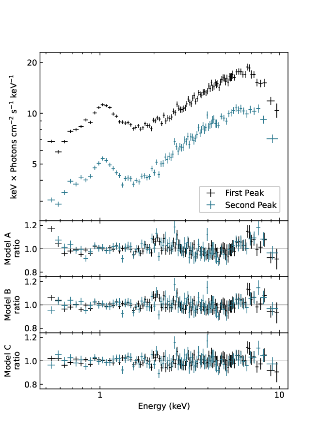
图注：爆发首峰（黑色）与次峰（青色）的展开谱乘以能量，谱图由Model C产生；下方给出Models A、B、C的拟合残差，其中B与C采用跨谱捆绑铁丰度。此图为显示重新分箱，实际拟合分箱见附录图A1。
怎么看这张图：比较软能段残差是否随加入反射和持续谱缩放而减小；展开谱依赖模型，不能将彩色曲线视为未经模型处理的直接物理分量。 峰区多成分拟合证据
来源与置信度：arXiv HTML；source verified；https://arxiv.org/html/2611.24635v1/PEAKS_SPEC_RAT_NEWER_REBINNED.png
图6
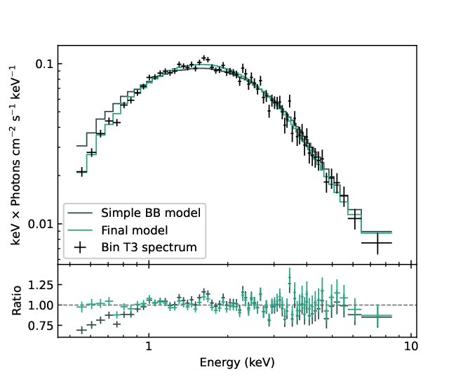
图注：爆发尾段T3的能谱、模型与残差。上方为展开谱乘以能量，并比较简单黑体处理与允许吸收柱和盘温变化的最终模型；下方为各自残差。
怎么看这张图：重点看1 keV以下简单处理的软缺额及最终模型改善，支持尾段环境变化；它不直接测量盘厚或证明唯一吸收物质来源。 独立尾段证据
来源与置信度：arXiv HTML；source verified；https://arxiv.org/html/2611.24635v1/burst_tail_T3_spec.png
图1
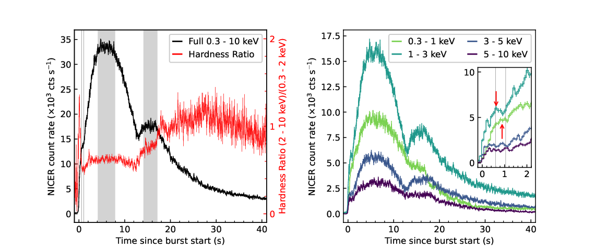
图注：左：0.3—10 keV、0.1秒分箱的NICER爆发光变，灰线标记上升停顿起止，灰色区域为峰谱区间；红色为2—10 keV计数除以0.3—2 keV计数的硬度比。右：分能段光变，插图放大停顿，灰线沿用总能段起止，红箭头标记正文讨论特征。
怎么看这张图：高能段停顿更突出，软段大量计数会稀释总能段特征；这些局部平台不是周期证据。 能段依赖与时间选择
来源与置信度：arXiv HTML；source verified；https://arxiv.org/html/2611.24635v1/LIGHTCURVE_BURST_NEW.png
强相关工作
Bult等2019年对同一爆发的研究（doi:10.3847/2041-8213/ab4ae1）发现软过量、峰期反射及爆发振荡，是本次重分析的观测起点。本文增加第二峰自由离化的比较、持续谱缩放与反射并用，以及200秒以后的长尾；这是相同数据的模型与时间范围扩展，不能与旧结果算成两个独立源事件。
Worpel等2013年提出的f_a方法（doi:10.1088/0004-637X/772/2/94）为持续谱变化提供简洁参数化；Speicher等2024年（doi:10.3847/1538-4357/ad863d）提醒其可能更多反映照射盘温而非吸积率。He与Keek2016年（doi:10.3847/0004-637X/819/1/47）的各向异性盘几何则说明反射/直接比可受遮挡改变。三者分别连接经验测量、物理解读和几何退化，不能用其中任一个替代本次数据的完整约束。
同一事件 / 同类源线索：
相似工作：
基础理论 / 方法工作：
相反观点 / 张力线索：
（未提供）
相关简报
1. Calibration of LHAASO-WCDA Energy Scale using Cosmic Ray Moon Shadow
- 来源：arXiv / astro-ph.HE
- 链接：https://arxiv.org/abs/2611.24261
- 作者：Zhen Cao, F. Aharonian, Y.X. Bai, Y.W. Bao, D. Bastieri, X.J. Bi, Y.J. Bi, W. Bian
- 公告 / 来源日期：2026-11-19
- 阅读层级：相关简报
- 评分：novelty 7/10，importance 8/10，relevance 10/10，final 9.40/10
- 推荐理由：3.4年WCDA月影结合四种成分模型标定4—37TeV能标，给出偏移与95%区间，直接服务高能谱系统误差；月影法本身成熟，创新性7而非因LHAASO关联抬高。
中文题目：WCDA以3.4年月影数据检验4—37 TeV宇宙线能标
问题、方法与结论：作者利用2021年3月至2024年7月WCDA全阵列数据，以月球遮挡宇宙线形成的亏损向西偏移来检验能标。有效月球曝光4269.64小时，月球5度内约13.3亿事件；要求触发单元数大于120、核心距边缘至少30米、天顶角小于45度。按核心20—120米、锥面30纳秒内光电子数分八组，用等天顶角背景及一维高斯投影测量偏移，再与四种成分模型、五类核素的簇射和地磁追踪模拟比较。校准/模拟能量的共同尺度差为−0.04±0.03，论文报告95%区间−9%至+0.2%。
意义与贡献：地磁偏转为地面簇射能量估计提供独立物理锚点，能帮助判断谱折点和截断是否受整体能标漂移影响。相对早期单池工作，全文扩展到三池和3.4年，并检查年度、季节稳定性；该结果针对所选宇宙线样本，不能直接等同伽马能标误差。
可借鉴之处：可借鉴的是把测得偏移、核组成与探测器角分辨分别纳入前向模型，并用赤纬偏移估计指向系统误差。有效电荷因子来自完整模拟而非简单平均电荷，因此不是完全摆脱强相互作用和组成假设的能量测量。
局限与关注点：读者应分别看统计误差、组成误差和指向误差，尤其高能端偏转变小后指向误差会放大。原表4最高能点的负向指向误差写为58.95 TeV，超过中心值36.60 TeV，且不能直接与图11高能误差带对应，需核实。总体95%区间沿用作者口径，未独立重算；不将这一数值当作无争议的外部校准先验。
图11
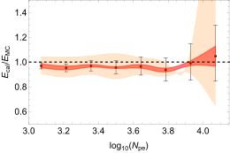
图注：各光电子数分箱的校准能量与蒙特卡洛能量之比。黑点及黑色误差棒分别为比值和统计误差；浅橙与深橙色带分别表示指向精度和宇宙线组成模型造成的系统不确定度。
怎么看这张图：比较各箱比值是否围绕1，并留意高能端指向误差相对扩大。色带为不同系统来源，不能把黑色误差棒单独当作总误差；最高能表格误差异常已在正文保留。 直接展示能标偏差与误差预算。
来源与置信度：arXiv HTML；source verified；https://arxiv.org/html/2611.24261v1/new_add_fig12.svg
2. A lepto-hadronic perspective on the properties of the candidate neutrino-emitter blazar 5BZQ J0808+4950
- 来源：arXiv / astro-ph.HE
- 链接：https://arxiv.org/abs/2611.24418
- 作者：Margot Boughelilba, Leonard Pfeiffer, Jose Maria Sanchez Zaballa, Alessandra Azzollini, Annette Bremer, Sara Buson, Massimiliano Lincetto
- 公告 / 来源日期：2026-11-19
- 阅读层级：相关简报
- 评分：novelty 7/10，importance 8/10，relevance 10/10，final 9.40/10
- 推荐理由：六个同期SED历元的含外部光场时变轻强子模型，给出X射线与中微子联系及每历元10^-3至10^-1预期事件，直接服务中微子源判别；模型可容纳单事件不等于关联发现，属有用新约束而非新发现，建议简报。
中文题目：5BZQ J0808+4950：分历元轻强子模型中的中微子预期
问题、方法与结论：作者把2008—2024年的Fermi-LAT及多波段资料分成六个历元，用AM3演化运动辐射区内的电子、质子和级联，同时加入盘、宽线区及尘环光场。各历元预期IceCube可探测的缪子中微子加反中微子约0.001—0.101个；覆盖IC110929A的T3历时4.9年，预期0.101个对应至少探测一次的泊松概率约9.6%。这是有条件的模型相容性，并非确认源关联。
意义与贡献：模型提供了检验高能中微子候选的多波段约束：六个最佳解的中微子光度与X射线联系强于与GeV伽马光度的联系，提示强子级联可在X射线显露。不过这张相关图比较的是模型预测，不能当作观测到了中微子光变相关。
可借鉴之处：可借鉴先以LAT贝叶斯分块划定状态，再以X射线和GeV上限压制级联的做法。T3约129 GeV光子的源归属概率仅约1%，作者将其判为弥散背景主导；这种逐事件核查能避免用孤立高能点虚增强子需求。
局限与关注点：关键限制是T3—T5数据少于13个自由参数，且缺同期X射线；参数逐一扫描范围不是联合统计误差。模型喷流功率为爱丁顿光度约2—20倍，T4、T5容许零质子注入。候选位于IC110929A的90%定位边界外，9.6%也不是关联显著性。图3将阴影称为1σ，与正文对参数范围的限定不同，应以后者解释。
图5
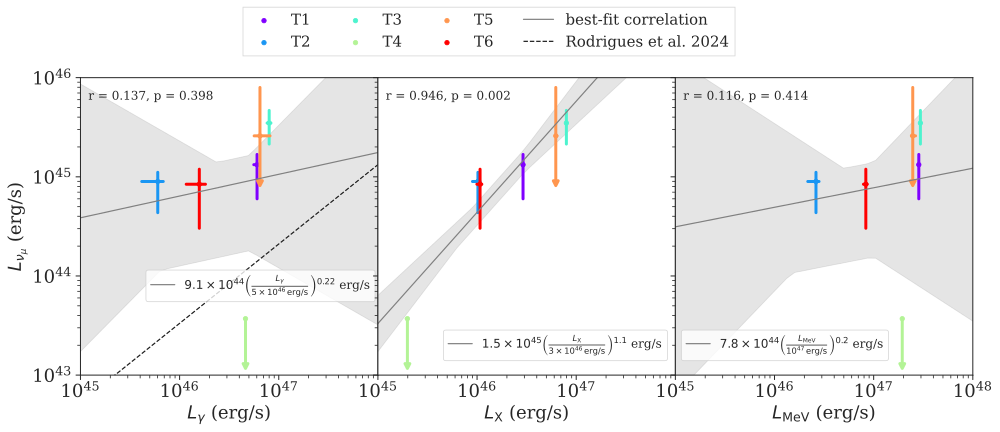
图注：六个最佳SED解的中微子光度分别与0.1—100 GeV伽马光度、0.3—10 keV X射线光度及0.1—100 MeV光度比较，由左至右排列。各面板给出线性拟合、Pearson系数与p值；灰色阴影为拟合斜率和截距的1σ带，左图黑虚线是Rodrigues等总体样本关系。
怎么看这张图：先比较三面板的散布，X射线关系最紧；这些坐标均来自同组模型，并非六次中微子实测，不能把相关系数解释为源关联显著性。 支持简报核心结论的原图
来源与置信度：arXiv HTML；source verified；https://arxiv.org/html/2611.24418v1/Luminosities_comparison.svg
3. Strongly Suppressed Cosmic-Ray Diffusion in a Wind-Blown Cavity Environment of SNR G21.8-3.0
- 来源：arXiv / astro-ph.HE
- 链接：https://arxiv.org/abs/2611.23744
- 作者：Yuan Li, Gwenael Giacinti, Yang Su, Xiao Zhang, Hui Li, Yang Chen
- 公告 / 来源日期：2026-11-19
- 阅读层级：相关简报
- 评分：novelty 7/10，importance 7/10，relevance 10/10，final 9.05/10
- 推荐理由：摘要初筛：16年LAT与CO联合发现偏离G21.8−3.0的GeV源，给出风泡外云被逃逸宇宙线照亮及几十倍扩散抑制的模型约束；源关联和湍流因果解释仍需全文区分观测证据与模型假设。
中文题目：G21.8−3.0 外侧分子云的 GeV 辐射提示风泡环境中的慢扩散
问题、方法与结论：作者联合16年Fermi-LAT与MWISP一氧化碳观测，研究偏离超新星遗迹G21.8−3.0的GeV源SrcT。该源与已有4FGL位置一致，未检出显著延展或变动；谱曲率检验统计量46.7。约每秒9公里的气体呈空腔及边缘密云结构，支持逃逸宇宙线照亮外侧气体的解释。采用0.8千秒差距、约3000年遗迹年龄和连续球壳注入模型，Bohm式能量依赖的扩散解在10 GeV约为10的27次方平方厘米每秒，约低于所比较银河标准值30倍；Kraichnan式能量依赖也有可接受解。
意义与贡献：结果说明低气体密度不必等于宇宙线自由逃逸：磁场结构和湍流仍可控制传播。约30倍抑制是距离、年龄与几何假设下的谱模型推断，不是直接测得湍流。小质子能量预算本身也不能证明慢扩散。
可借鉴之处：可借鉴的是把伽马形态、谱曲率、CO速度结构与有限厚度受照气层共同约束模型，而非只拟合能谱。模型改变云与遗迹间距及扩散能量依赖，显示同一偏移源存在参数退化，适合用来设计后续更高能谱与气体运动学检验。
局限与关注点：气体与遗迹关联仍是假设，CO速度展宽仅为暂定支持；0.08度是未分辨源的定位误差，被用作云尺度近似，不能当已测角尺寸。文中16时间箱却列99%变动阈值16.81，与15自由度口径不符；实际统计量7.9仍支持未检出变动。风泡约90万年动力学时间也不能混作遗迹年龄。
图1
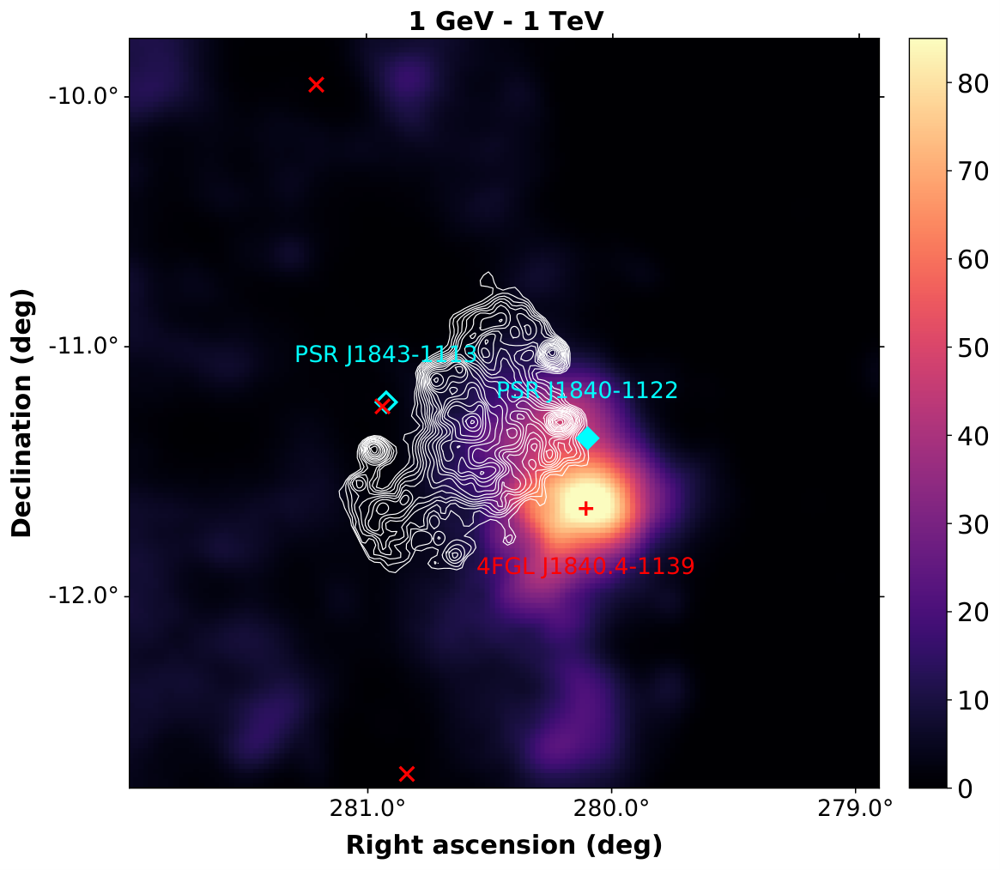
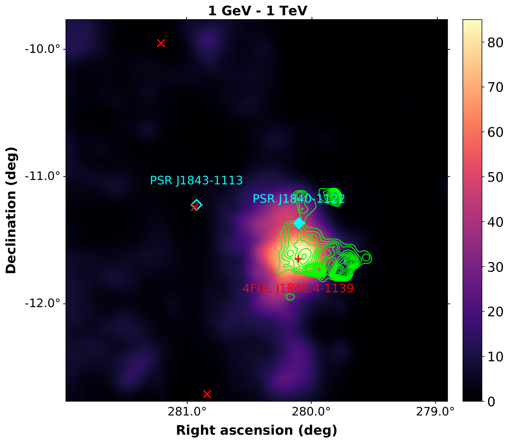
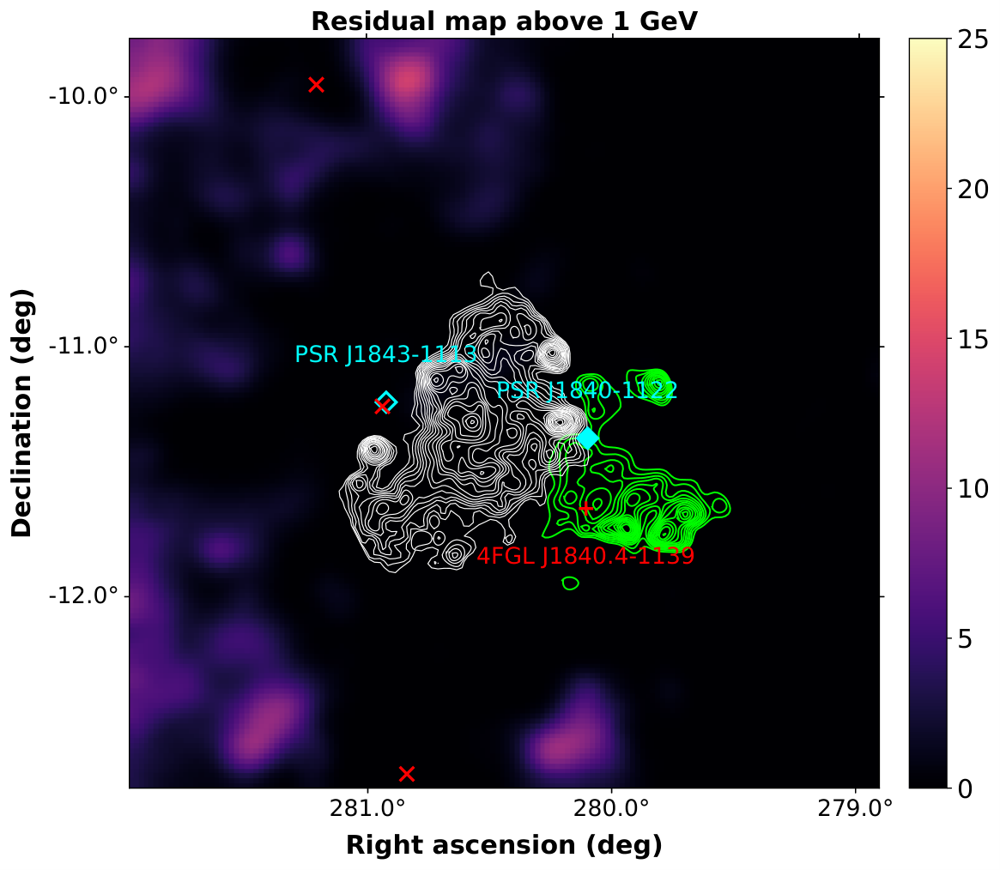
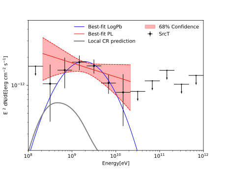
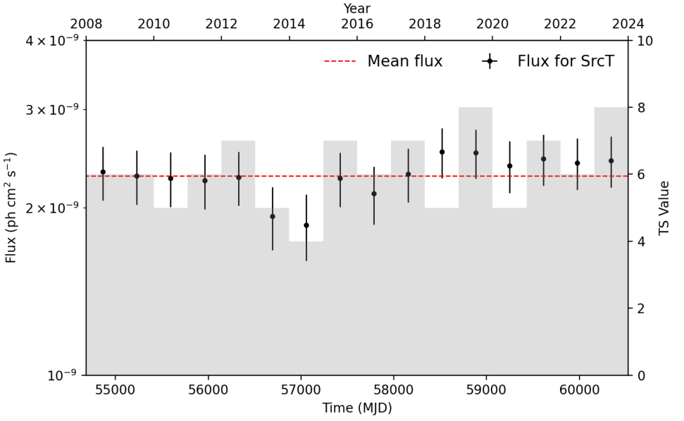
图注：上排为G21.8周围3度见方区域在1 GeV—1 TeV的检验统计量图；左、中图扣除弥散背景与除SrcT之外的4FGL-DR4源。红加号标出SrcT，红叉为背景目录源，青色菱形为两颗高能脉冲星；白线为Effelsberg 11厘米射电遗迹轮廓，绿线为MWISP的CO气体轮廓。左下为100 MeV—1 TeV能谱，黑箭头为95%上限，红虚线及带为幂律拟合和1σ统计误差，蓝线为对数抛物线，灰线为使用本地AMS-02宇宙线谱预期的云辐射。右下为0.1—10 GeV光变，红虚线为平均通量，灰柱为各时间箱检验统计量。
怎么看这张图：先看伽马源偏离射电壳且接近气体，再看弯曲能谱与近似稳定光变；投影重合与未变动支持解释，但不能独自确立云和遗迹的物理关联。 把位置、谱与时间证据放在同一原图中。
来源与置信度：arXiv HTML；source verified；https://arxiv.org/html/2611.23744v1/1gev_snr.png；https://arxiv.org/html/2611.23744v1/1gev_co.png；https://arxiv.org/html/2611.23744v1/1gev_residual.png；https://arxiv.org/html/2611.23744v1/sed.svg；https://arxiv.org/html/2611.23744v1/lc.png
4. Positron escape from dark matter spikes in black hole X-ray binaries
- 来源：arXiv / astro-ph.HE
- 链接：https://arxiv.org/abs/2611.23983
- 作者：Mpho Kgoadi, Geoff Beck
- 公告 / 来源日期：2026-11-19
- 阅读层级：相关简报
- 评分：novelty 7/10，importance 8/10，relevance 9/10，final 9.05/10
- 推荐理由：将近视界磁场与输运纳入正电子逃逸，指出两个黑洞双星暗物质尖峰解释AMS-02需提高截面约500—1400倍；对高能粒子模型有直接约束，需全文核验环境假设。
中文题目：近黑洞冷却削弱暗物质尖峰对正电子过量的解释
问题、方法与结论：本文复查以A0620−00和XTE J1118+480周围暗物质密度尖峰解释AMS-02高能正电子的模型。作者先复现原计算，再把处处2微高斯的磁场替换为由宁静吸积谱拟合支持的近视界强磁场，并跟踪逃逸前冷却。只计尖峰、固定湮灭截面时，预测峰值被压低约500—1400倍；这不是对所有暗物质解释的排除，而是针对这两处尖峰及所用环境假设。
意义与贡献：结果指出体积小不等于贡献小：尖峰湮灭率按密度平方加权，绝大多数粒子恰在强磁场区域产生。复现的原峰值约98%实际上来自延伸至扩散晕的均匀环境项，尖峰仅约2%；不先拆开两项就会误判黑洞尖峰的解释能力。
可借鉴之处：可借鉴分别检查源项归一化、局域能损和银河传播，再以光速直线逃逸构造最快逃逸对照。即便该极限也抑制数百倍，避免把结论绑在单一Bohm扩散选择上；独立的湮灭饱和还会降低尖峰中心密度。
局限与关注点：磁场与尖峰年龄均依赖模型，作者测试多种输运和弱场，但没有直接测量暗物质尖峰。射电截面限制对尖峰半径尤其敏感，改用对照论文的半径及吸积率可大幅消除差异。热截面以下的限制仅覆盖特定质量、末态和尖峰模型，不能推广为普适暗物质排除。
图3
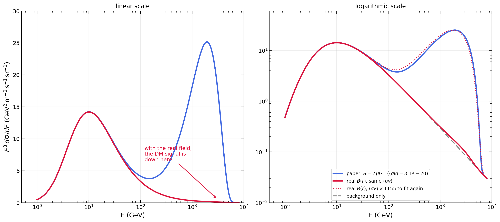
图注：仅由暗物质尖峰产生的到达地球正电子通量，两次计算采用不同磁场。蓝线为处处2微高斯，红线为近视界强场且保持同一湮灭截面；红点线将截面增加1155倍以恢复峰值，虚线为背景。左面板采用线性尺度，右面板采用对数尺度。
怎么看这张图：对比同截面的蓝红曲线才是磁场冷却效应；红点线恢复峰值付出的代价是更大截面，并不表示该参数已满足其他约束。 支持简报核心结论的原图
来源与置信度：arXiv HTML；source verified；https://arxiv.org/html/2611.23983v1/figures/field_effect.png
5. Fast X-ray Transients as Premature-Dissipated Gamma-Ray Bursts with Magnetic-Dominated Jets
- 来源：arXiv / astro-ph.HE
- 链接：https://arxiv.org/abs/2611.23380
- 作者：Shu-Xu Yi, Shao-Lin Xiong
- 公告 / 来源日期：2026-11-19
- 阅读层级：相关简报
- 评分：novelty 7/10，importance 7/10，relevance 9/10，final 8.70/10
- 推荐理由：摘要初筛：提出磁主导喷流提前耗散统一FXT与GRB，并给湮灭线漂移预测；模型解释五事件但未见摘要给出拟合优度或排他证据，按有用机制增量评分，不将共同起源视为已证实。
中文题目：磁主导喷流提前耗散能否统一快速 X 射线暂现源与伽马暴？
问题、方法与结论：作者提出一个玩具模型：由黑洞电磁抽能驱动的磁主导喷流，若在恒星表面仍能横向因果连通，扭曲不稳定性可使磁能提前耗散。小半径、低洛伦兹因子与高紧致度有利于成对产生和辐射热化，形成柔软X射线；未提前耗散的喷流继续加速，在更大半径产生普通伽马暴。模型定性对照五个暂现源，并把EP240801a置于两分支边界，用假定半径和洛伦兹因子估出约71秒延迟，与观测约80秒同量级；这不是逐事件统计拟合。
意义与贡献：方案给出一种把热谱、弱伽马辐射、晚余辉与未见喷流折断连接起来的共同图像。新增价值是提出可检验的机制分支，尚未证明所有暂现源同源，也未排除离轴喷流、茧或重子负载模型。
可借鉴之处：作者建议寻找约百分之一秒内从数MeV扫到数百keV的正负电子湮灭线，可用逐光子模板检验；另预测毫秒级最短变动。两者都是模型预测，当前计数不足以实测，并非已发现线或已验证时标。
局限与关注点：恒星表面为何成为首选耗散位置仍缺动力学证明；因果连通判据没有替代三维磁流体模拟，低速余辉也未详细拟合。图中多个事件位置仅作示意，EP240801a边界位置由模型指定。原文热化约0.7 keV为共动系均能，不能直接等同观测峰能；初始磁化定义与终端速度标度也需进一步自洽核查。
图2
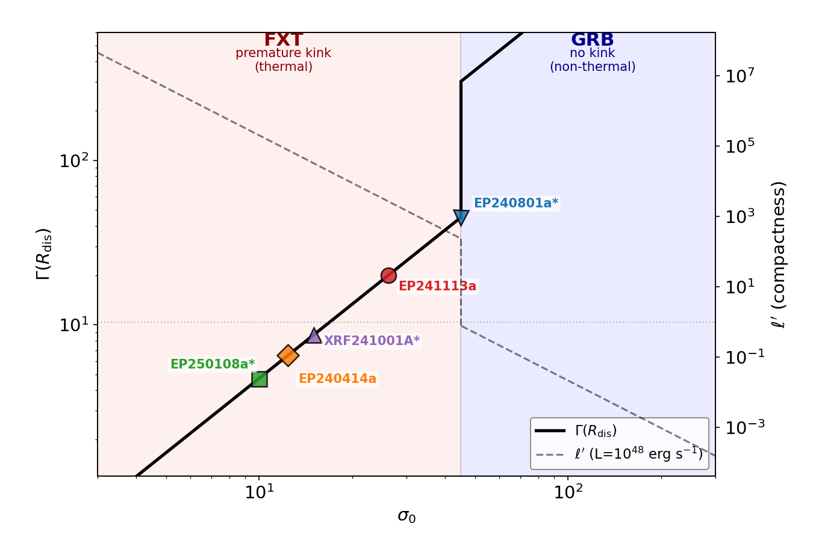
图注：模型中耗散半径处的洛伦兹因子（黑实线、左轴）和共动紧致度（虚线、右轴，取光度10的48次方尔格每秒）随初始磁化参数变化。红区为磁化参数小于45时在恒星表面提前耗散的快速X射线暂现源分支，蓝区为大于45时的伽马暴分支，竖直线段连接两支。EP241113a与EP240414a的洛伦兹因子来自文献推断；带星号的EP250108a、XRF241001A仅置于示意磁化值，EP240801a按模型构造放在分界处，其洛伦兹因子并无独立观测约束。
怎么看这张图：这是给定恒星半径、开角和饱和半径下的模型图，星号不能当作独立验证分界的观测点；需特别区分文献推断和模型指定位置。 直接显示模型分支与观测比较的证据边界。
来源与置信度：arXiv HTML；source verified；https://arxiv.org/html/2611.23380v1/sigma0_gamma_compactness.png
6. Constraining Accretion Heating in Neutron Stars with Carbon Instability and Quiescent Cooling
- 来源：arXiv / astro-ph.HE
- 链接：https://arxiv.org/abs/2611.23955
- 作者：Chengze Hou, Amira Aoyama, Akira Dohi
- 公告 / 来源日期：2026-11-19
- 阅读层级：相关简报
- 评分：novelty 8/10，importance 7/10，relevance 8/10，final 8.65/10
- 推荐理由：联合超暴碳不稳定条件与十个静默Chandra谱区分加热深度，具体揭示早期过热与吸收拟合冲突；旧燃料可恢复退化，约束仍依赖热历史，重要性暂定7。
中文题目：用碳点火与静默冷却共同约束中子星吸积加热深度
问题、方法与结论：中子星停止吸积后的冷却曲线，常可由不同加热深度配合不同强度拟合。作者针对KS 1731−260，把1996年超级暴发的18段衰减通量、重建的吸积史与2001—2015年10次Chandra光谱连接，比较与碳燃料层重叠及位于其下方的热源。只拟合冷却时两者几乎等价；加入暴发时刻碳局部不稳定条件后，深层热源必须更强，残留内热造成早期X射线过亮。参考模型中，每个吸积核子的加热分别为2.19和4.00 MeV，光谱统计量W为306和618，较冷却单独拟合分别增加约39和352。
意义与贡献：关键增量是利用不同阶段观测打破热源位置退化：暴发约束燃料是否能点燃，静默光谱约束内部储热。较浅加热的偏好在所试燃料深度、核反应率、距离及吸收处理中保持，但这是给定热输运和燃料历史的相对比较，不能解释为浅层热源已唯一识别。
可借鉴之处：可借鉴的是把热演化预测直接折叠进每次观测的仪器响应，联合拟合泊松计数与背景，而非只比较事先提取的温度点。吸收柱密度若为压低早期过量而增加，会同时压低晚期谱，这一跨时段残差结构比单条冷却曲线更能诊断模型。
局限与关注点：两种CF88参考受约束模型的绝对拟合都存在问题：固定热历史的300次计数模拟均未超过观测W，不能把两者差值换成发现显著性。允许碳埋藏和燃烧会改善冷却，却仍产生过宽暴发；合成例中旧物质保留碳可让深加热冷却与浅模型相差仅约1 eV。有限参数搜索、未知暴发通量误差相关性及忽略对流都限制唯一反演。
图3
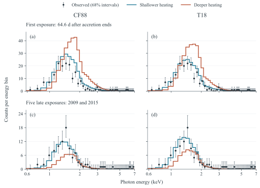
图注：在燃料柱深 $6.3\times10^{11}$ g cm$^{-2}$、碳质量分数0.20处要求局部碳不稳定后的静默光谱。左列采用CF88碳聚变率，右列采用T18；上排为首次曝光，下排合并2009与2015年的五次曝光。曲线是经吸收和仪器响应处理的中子星氢大气模型，首次曝光另加幂律，再加按曝光与区域缩放的实测背景。点为源区计数，误差棒为中心68%泊松区间；两列使用相同观测。
怎么看这张图：先比较深层加热的早期过量与晚期不足：增加吸收不能同时修复两端。右列较快核反应率缓解但没有消除深层模型的张力；这些为条件模型比较。 直接展示打破加热深度退化的跨时段谱残差。
来源与置信度：arXiv HTML；source verified；https://arxiv.org/html/2611.23955v1/cooling_spectra.svg
7. Gaia's promise to detect compact-object binaries II: Predictions for dormant neutron star binaries in DR4 and beyond
- 来源：arXiv / astro-ph.HE
- 链接：https://arxiv.org/abs/2611.23372
- 作者：Chirag Chawla, Sourav Chatterjee, Katelyn Breivik
- 公告 / 来源日期：2026-11-19
- 阅读层级：相关简报
- 评分：novelty 7/10，importance 7/10，relevance 8/10，final 8.35/10
- 推荐理由：摘要初筛：将种群合成接到Gaia多历元轨道拟合选择函数，预测与简单轨道尺度选择相差显著，可检验孤立双星形成通道；主要为模型预测而非新发现，DR3数量张力须全文核查。
中文题目：Gaia能找到多少休眠中子星双星：选择函数比超新星模型更影响预测
问题、方法与结论：休眠中子星不能靠吸积X射线识别，却可使可见伴星的天空位置作周期摆动。作者用COSMIC双星族群合成、FIRE-2银河系类似星系的恒星形成史及三维尘埃，生成100组银河实现，比较快速和延迟超新星处方。简单轨道角尺寸筛选预计Gaia DR4找到约4500—4700对；模拟逐次测量和轨道拟合流程的gaiamock却只给约100—110对，DR5约300—380对。差别主要在是否先被单星拟合的残差筛选送入轨道解流程：超过九成简单筛选目标在这一关落选。
意义与贡献：这是对未来目录的条件预测，不是新发现数量。它表明仅用轨道角尺寸超过测量误差估算样本，会大幅高估产额；可探测样本又偏向低踢速、低质量中子星，使本征族群中两种超新星机制的质量差别被选择效应削弱。
可借鉴之处：可借鉴完整的前向选择建模：演化后的轨道、朝向、距离和消光先转成多历元天体测量，再执行与目录类似的单星、加速度及双星拟合。应把目录处理阈值与物理模型共同检验，不能由候选数高于100便单独断言需要动力学形成。
局限与关注点：误差带只是100次银河抽样的10—90百分位，不含共同包层、出生踢速和质量转移全部系统误差。DR3的gaiamock预测1—8对低于27个候选，可能涉及演化处方、遗漏形成通道或实际筛选差异。DR4预计13—22个可探测系统含年轻脉冲星，射电束朝向我们约只1—2个；不是13—22个必然射电检出。
图5
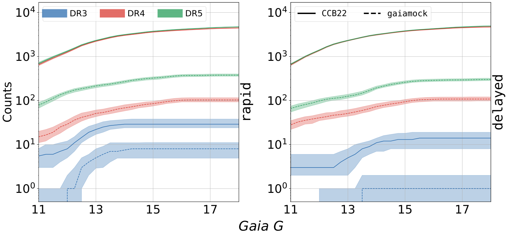
图注：Gaia可探测的中子星—可见伴星双星累计数随伴星G星等的变化；左、右分别为快速和延迟超新星模型。颜色区分DR3、DR4、DR5，实线为CCB22近似选择函数，虚线为gaiamock。线为100次银河实现的中位数，阴影为10—90百分位范围。
怎么看这张图：在同一星等和数据发布下比较实虚线，数量差距来自选择流程；阴影仅反映银河抽样，不能视为总预测不确定性。 突出全文最有实际意义的探测选择效应。
来源与置信度：arXiv HTML；source verified；https://arxiv.org/html/2611.23372v1/redd_detect_ns.svg
8. The Population of Radio Hypernebulae from Mass-Transferring Massive Binaries
- 来源：arXiv / astro-ph.HE
- 链接：https://arxiv.org/abs/2611.23783
- 作者：Kohki Uno, Brian D. Metzger, Navin Sridhar, Lieke A. C. van Son, Floor S. Broekgaarden, Dillon Z. Dong, Keiichi Maeda
- 公告 / 来源日期：2026-11-19
- 阅读层级：相关简报
- 评分：novelty 7/10，importance 7/10，relevance 8/10，final 8.35/10
- 推荐理由：摘要初筛：COMPAS质量转移种群接时间依赖射电星云模型，预测VLASS/DSA-2000与Roman可检出群体，对超爱丁顿双星演化有用；预测数量依赖保守模型，尚无新样本检验，不作为观测发现。
中文题目：超爱丁顿双星的射电星云族群：可检出数量高度依赖喷流微物理
问题、方法与结论：大质量双星向中子星或黑洞短暂输送远超爱丁顿率的物质时，喷流和盘风可鼓起发射同步辐射的“超星云”。作者将1000万组COMPAS双星演化与半解析射电光变连接，以恒星形成和金属丰度历史加权，并把巡天通量阈值及可见寿命纳入计数。保守的低喷流速度模型预计VLASS可见约100个、DSA-2000约10万个；GHz峰值谱光度可达每赫兹每秒10的28—30次方erg。多数系统持续数千年以上，因此主要呈现常亮射电源，而非短暂爆发。
意义与贡献：贡献是把单源辐射设想接到双星族群发生率及巡天可选样本，给出偏离星形成区的位置、可分辨尺度和伴星等多重识别线索。中等寿命、较高质量转移率系统比寿命最长者更容易形成明亮GHz星云；亮度与持续时间必须联合考虑。
可借鉴之处：值得借鉴以发生率乘每个亮度区间的停留时间构建光度函数，再使用红移后的频率和光变计算通量受限样本。寻找候选可结合高射电亮度、长期稳定、偏离星系中心及恒星形成区、毫角秒尺度和明亮氦星伴星；这些条件需要联合验证，不能仅以射电源与FRB位置接近确认机制。
局限与关注点：喷流速度和电子加热率由0.15同时调到0.25后，预测数可相差多个数量级；最乐观模型给VLASS约700万个，超过其约200万个全部射电源，已显过量。热Maxwell电子、均匀环境及排除最终并合系统都强烈限制结论。SS433只做数量级一致性检验；FRB 20250316A的近红外关联仍有条件，射电持续源未检出须单独面对，不能称本模型已获证实。
图12
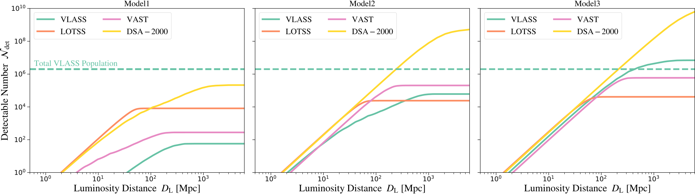
图注：不同射电巡天在给定光度距离以内可探测的超星云累计数。各曲线代表图例所列巡天，参数采用表2；三个面板分别为Model1、Model2和Model3，对应依次增加的喷流速度与电子加热效率。
怎么看这张图：固定巡天后比较三幅面板，微物理改变会使数量跨越多个数量级；最乐观VLASS预测甚至超过该巡天全部射电源，不能把三个模型当作均已成立的预测区间。 显示族群预测最核心的不确定性及现有计数约束。
来源与置信度：arXiv HTML；source verified；https://arxiv.org/html/2611.23783v1/Ndet_combined_015_020_025.svg
9. Interpretable attention-based neural posterior estimation for fast radio burst cosmology
- 来源：arXiv / astro-ph.HE
- 链接：https://arxiv.org/abs/2611.24542
- 作者：Tian-Yang Sun, Ji-Guo Zhang, Wan-Peng Sun, Jing-Fei Zhang, Xin Zhang
- 公告 / 来源日期：2026-11-19
- 阅读层级：相关简报
- 评分：novelty 7/10，importance 7/10，relevance 8/10，final 8.35/10
- 推荐理由：注意力加条件流加速七参数FRB后验，与模拟及实测MCMC对照，适合重复推断的方法参考；百万倍耗时比只计训练后采样，不代表全部计算成本或新宇宙学发现，注意力不能直接作物理因果解释。
中文题目：注意力与归一化流加速FRB宇宙学后验：速度优势限于训练后推断
问题、方法与结论：作者将120个有红移的快速射电暴的色散量输入注意力编码器，压成16维目录表示，再由条件归一化流近似七个宇宙学和宿主参数的联合后验。500份独立模拟目录的边缘与联合覆盖检验，以及同似然、同先验下的MCMC对照，支持该训练设定内的不确定度校准。实际目录中五个展示量的Jensen–Shannon差异均小于0.0043，68%区间宽度比为0.993—1.095；说明近似后验接近参照计算，不是获得了独立宇宙学证据。
意义与贡献：方法把昂贵的逐源宿主、银河晕与星系际色散卷积成本转移到模拟训练。训练后GPU生成5万后验样本用0.036秒，而参照MCMC的28个CPU工作进程保留104万样本用72.8小时。硬件、样本数均不同，约百万倍是特定整次推断耗时比，不包含每轮百万模拟目录及网络训练成本。
可借鉴之处：可借鉴同时检查边缘覆盖、联合覆盖和传统采样器对照，而不只画重叠角图；注意力还结合单源色散替换检验，区分网络权重与后验实际响应。中间红移段贡献最大兼有源数量多的原因，不应据此认为高红移单源信息量较小。
局限与关注点：全部模拟固定为实测120个红移，尚未验证新样本规模或不同红移覆盖的直接泛化。检测、宿主识别与色散切选效应被忽略；平均星系际色散只约束H0、重子密度与弥散比例的乘积，不能把七维输出当作七个独立可辨识测量。模拟覆盖通过也不能排除共同前向模型错误。
图6
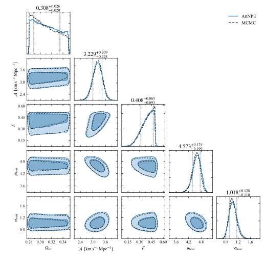
图注：实际FRB目录的AttNPE与MCMC后验对照。对角线为一维边缘分布，其余面板为两参数联合分布。蓝色实线及阴影轮廓为AttNPE，黑色虚线和轮廓为MCMC；对角面板上方标注MCMC中位数和中心68%可信区间。轮廓包围68%与95%后验质量。
怎么看这张图：先比较轮廓方向及宽度，判断近似是否保持退化结构；两者共享色散模型和先验，一致不等于物理模型或目录选择效应已获独立验证。 以真实目录直接显示后验近似质量。
来源与置信度：arXiv HTML；source verified；https://arxiv.org/html/2611.24542v1/fig_real_attnpe_mcmc_corner.svg
说明
评分由 LLM 给出初评，再由本地阈值策略过滤；IACT、TeV 伽马射线和高能中微子天文学按重点方向处理。